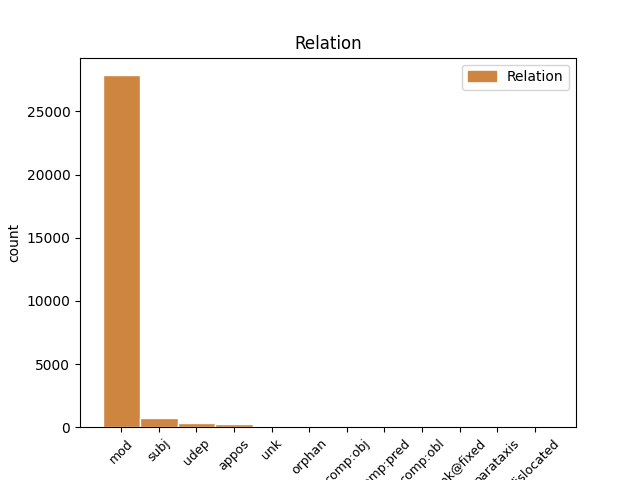
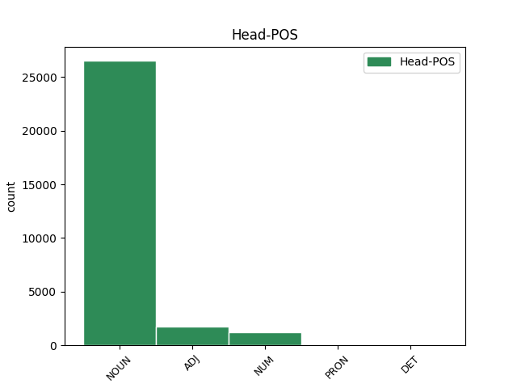
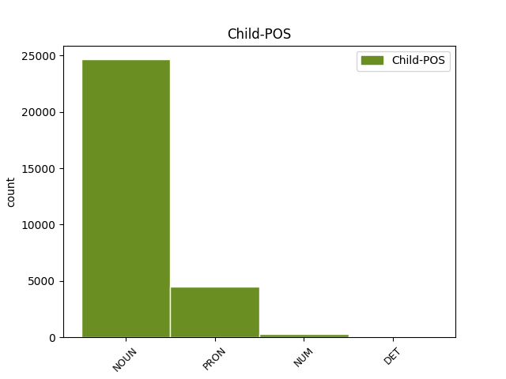

Distribution of features within this leaf



Agreement Rules sorted by frequency.
- When the dependent token is the modifer(mod) of the head token, and the head token is NOUN and the dependent token is NOUN.
1 و _ _ _ _ 0 _ _ _
2 قال _ _ _ _ 0 _ _ _
3 باول _ _ _ _ 0 _ _ _
4 خلال _ _ _ _ 0 _ _ _
5 مؤتمر _ _ _ _ 0 _ _ _
6 صحفى _ _ _ _ 0 _ _ _
7 مشترك _ _ _ _ 0 _ _ _
8 مع _ _ _ _ 0 _ _ _
9 رئيس _ _ _ _ 0 _ _ _
10 الوزراء _ _ _ _ 0 _ _ _
11 الفلسطينى _ _ _ _ 0 _ _ _
12 أبو _ _ _ _ 0 _ _ _
13 مازن _ _ _ _ 0 _ _ _
14 عقب _ _ _ _ 0 _ _ _
15 اجتماع _ _ _ _ 0 _ _ _
16 هما _ _ _ _ 0 _ _ _
17 فى _ _ _ _ 0 _ _ _
18 أريحا _ _ _ _ 0 _ _ _
19 فى _ _ _ _ 0 _ _ _
20 الضفة _ _ _ _ 0 _ _ _
21 الغربية _ _ _ _ 0 _ _ _
22 أن _ _ _ _ 0 _ _ _
23 " _ _ _ _ 0 _ _ _
24 على _ _ _ _ 0 _ _ _
25 الحكومة _ _ _ _ 0 _ _ _
26 الفلسطينية _ _ _ _ 0 _ _ _
27 وضع _ _ _ _ 0 _ _ _
28 حد _ _ _ _ 0 _ _ _
29 ل _ _ _ _ 0 _ _ _
30 الإرهاب _ _ _ _ 0 _ _ _
31 و _ _ _ _ 0 _ _ _
32 تفكيك تَفكِيك NOUN N------S1R Case=Nom|Definite=Cons|Number=Sing 0 _ _ _
33 بنية بِنيَة NOUN N------S1R Case=Nom|Definite=Cons|Number=Sing 32 mod _ Gloss=make_-_up,structure|LTranslit=binyat|Root=b_n_y|Translit=binyatu|Vform=بِنيَةُ
34 ه _ _ _ _ 0 _ _ _
35 التحتية _ _ _ _ 0 _ _ _
36 " _ _ _ _ 0 _ _ _
37 . _ _ _ _ 0 _ _ _
1 و _ _ _ _ 0 _ _ _
2 قال _ _ _ _ 0 _ _ _
3 باول _ _ _ _ 0 _ _ _
4 خلال _ _ _ _ 0 _ _ _
5 مؤتمر _ _ _ _ 0 _ _ _
6 صحفى _ _ _ _ 0 _ _ _
7 مشترك _ _ _ _ 0 _ _ _
8 مع _ _ _ _ 0 _ _ _
9 رئيس _ _ _ _ 0 _ _ _
10 الوزراء _ _ _ _ 0 _ _ _
11 الفلسطينى _ _ _ _ 0 _ _ _
12 أبو _ _ _ _ 0 _ _ _
13 مازن _ _ _ _ 0 _ _ _
14 عقب _ _ _ _ 0 _ _ _
15 اجتماع اِجتِمَاع NOUN N------S2R Case=Gen|Definite=Cons|Number=Sing 0 _ _ _
16 هما هُوَ PRON SP---3MD2- Case=Gen|Gender=Masc|Number=Dual|Person=3|PronType=Prs 15 mod _ Gloss=he,it,she|LTranslit=huwa|Translit=himā|Vform=هِمَا
17 فى _ _ _ _ 0 _ _ _
18 أريحا _ _ _ _ 0 _ _ _
19 فى _ _ _ _ 0 _ _ _
20 الضفة _ _ _ _ 0 _ _ _
21 الغربية _ _ _ _ 0 _ _ _
22 أن _ _ _ _ 0 _ _ _
23 " _ _ _ _ 0 _ _ _
24 على _ _ _ _ 0 _ _ _
25 الحكومة _ _ _ _ 0 _ _ _
26 الفلسطينية _ _ _ _ 0 _ _ _
27 وضع _ _ _ _ 0 _ _ _
28 حد _ _ _ _ 0 _ _ _
29 ل _ _ _ _ 0 _ _ _
30 الإرهاب _ _ _ _ 0 _ _ _
31 و _ _ _ _ 0 _ _ _
32 تفكيك _ _ _ _ 0 _ _ _
33 بنية _ _ _ _ 0 _ _ _
34 ه _ _ _ _ 0 _ _ _
35 التحتية _ _ _ _ 0 _ _ _
36 " _ _ _ _ 0 _ _ _
37 . _ _ _ _ 0 _ _ _
1 و _ _ _ _ 0 _ _ _
2 قال _ _ _ _ 0 _ _ _
3 نيه _ _ _ _ 0 _ _ _
4 جون _ _ _ _ 0 _ _ _
5 عضو _ _ _ _ 0 _ _ _
6 فريق _ _ _ _ 0 _ _ _
7 خبراء _ _ _ _ 0 _ _ _
8 مكافحة _ _ _ _ 0 _ _ _
9 سارس _ _ _ _ 0 _ _ _
10 التابع _ _ _ _ 0 _ _ _
11 ل _ _ _ _ 0 _ _ _
12 وزارة _ _ _ _ 0 _ _ _
13 الصحة _ _ _ _ 0 _ _ _
14 إن _ _ _ _ 0 _ _ _
15 ه _ _ _ _ 0 _ _ _
16 إلى _ _ _ _ 0 _ _ _
17 جانب _ _ _ _ 0 _ _ _
18 بكين _ _ _ _ 0 _ _ _
19 تضررت _ _ _ _ 0 _ _ _
20 مناطق _ _ _ _ 0 _ _ _
21 اخرى _ _ _ _ 0 _ _ _
22 مثل _ _ _ _ 0 _ _ _
23 شانشى _ _ _ _ 0 _ _ _
24 و _ _ _ _ 0 _ _ _
25 منغوليا _ _ _ _ 0 _ _ _
26 الداخلية _ _ _ _ 0 _ _ _
27 وخيبى _ _ _ _ 0 _ _ _
28 وتيانجين _ _ _ _ 0 _ _ _
29 فى _ _ _ _ 0 _ _ _
30 شمالى شَمَالِيّ ADJ A-----MS2R Case=Gen|Definite=Cons|Gender=Masc|Number=Sing 0 _ _ _
31 الصين صِين NOUN N------S2D Case=Gen|Definite=Def|Number=Sing 30 mod _ Gloss=China|LTranslit=ṣīn|Root=.sIn|Translit=aṣ-ṣīni|Vform=اَلصِّينِ
32 ب _ _ _ _ 0 _ _ _
33 هٰذا _ _ _ _ 0 _ _ _
34 الوباء _ _ _ _ 0 _ _ _
35 ب _ _ _ _ 0 _ _ _
36 شكل _ _ _ _ 0 _ _ _
37 حاد _ _ _ _ 0 _ _ _
38 . _ _ _ _ 0 _ _ _
39 و _ _ _ _ 0 _ _ _
40 أضاف _ _ _ _ 0 _ _ _
41 أن _ _ _ _ 0 _ _ _
42 ه _ _ _ _ 0 _ _ _
43 تم _ _ _ _ 0 _ _ _
44 اكتشاف _ _ _ _ 0 _ _ _
45 66.5 _ _ _ _ 0 _ _ _
46 فى _ _ _ _ 0 _ _ _
47 المائة _ _ _ _ 0 _ _ _
48 من _ _ _ _ 0 _ _ _
49 إجمالى _ _ _ _ 0 _ _ _
50 حالات _ _ _ _ 0 _ _ _
51 سارس _ _ _ _ 0 _ _ _
52 فى _ _ _ _ 0 _ _ _
53 البر _ _ _ _ 0 _ _ _
54 الرئيسى _ _ _ _ 0 _ _ _
55 ب _ _ _ _ 0 _ _ _
56 المناطق _ _ _ _ 0 _ _ _
57 الخمس _ _ _ _ 0 _ _ _
58 السابق _ _ _ _ 0 _ _ _
59 ذكر _ _ _ _ 0 _ _ _
60 ها _ _ _ _ 0 _ _ _
61 . _ _ _ _ 0 _ _ _
1 و _ _ _ _ 0 _ _ _
2 يذكر _ _ _ _ 0 _ _ _
3 أن _ _ _ _ 0 _ _ _
4 الكويت _ _ _ _ 0 _ _ _
5 كانت _ _ _ _ 0 _ _ _
6 قد _ _ _ _ 0 _ _ _
7 أعلنت _ _ _ _ 0 _ _ _
8 في _ _ _ _ 0 _ _ _
9 الاسبوع _ _ _ _ 0 _ _ _
10 الماضي _ _ _ _ 0 _ _ _
11 عن _ _ _ _ 0 _ _ _
12 تخصيص _ _ _ _ 0 _ _ _
13 ها _ _ _ _ 0 _ _ _
14 ل _ _ _ _ 0 _ _ _
15 ثمانية _ _ _ _ 0 _ _ _
16 ملايين مِليُون NUM QM-----P2R Case=Gen|Definite=Cons|Number=Plur|NumForm=Word 0 _ _ _
17 دولار دُولَار NOUN N------S2I Case=Gen|Definite=Ind|Number=Sing 16 mod _ Gloss=dollar|LTranslit=dūlār|Root=dUlAr|Translit=dūlārin|Vform=دُولَارٍ
18 ك _ _ _ _ 0 _ _ _
19 مبادرة _ _ _ _ 0 _ _ _
20 من _ _ _ _ 0 _ _ _
21 ها _ _ _ _ 0 _ _ _
22 ل _ _ _ _ 0 _ _ _
23 إعادة _ _ _ _ 0 _ _ _
24 تأهيل _ _ _ _ 0 _ _ _
25 مستشفى _ _ _ _ 0 _ _ _
26 البصرة _ _ _ _ 0 _ _ _
27 العام _ _ _ _ 0 _ _ _
28 . _ _ _ _ 0 _ _ _
1 و _ _ _ _ 0 _ _ _
2 قالت _ _ _ _ 0 _ _ _
3 المستشارة _ _ _ _ 0 _ _ _
4 الامريكية _ _ _ _ 0 _ _ _
5 ان _ _ _ _ 0 _ _ _
6 اسرائيل _ _ _ _ 0 _ _ _
7 يتحتم _ _ _ _ 0 _ _ _
8 علي _ _ _ _ 0 _ _ _
9 ها _ _ _ _ 0 _ _ _
10 الرد _ _ _ _ 0 _ _ _
11 ب _ _ _ _ 0 _ _ _
12 شكل _ _ _ _ 0 _ _ _
13 ايجابى _ _ _ _ 0 _ _ _
14 على _ _ _ _ 0 _ _ _
15 المتغيرات _ _ _ _ 0 _ _ _
16 التى _ _ _ _ 0 _ _ _
17 طرأت _ _ _ _ 0 _ _ _
18 على _ _ _ _ 0 _ _ _
19 القيادة _ _ _ _ 0 _ _ _
20 الفلسطينية _ _ _ _ 0 _ _ _
21 و _ _ _ _ 0 _ _ _
22 ضمان _ _ _ _ 0 _ _ _
23 تحسين _ _ _ _ 0 _ _ _
24 الأوضاع _ _ _ _ 0 _ _ _
25 الانسانية _ _ _ _ 0 _ _ _
26 و _ _ _ _ 0 _ _ _
27 إعادة _ _ _ _ 0 _ _ _
28 حرية _ _ _ _ 0 _ _ _
29 الحركة _ _ _ _ 0 _ _ _
30 ل _ _ _ _ 0 _ _ _
31 الفلسطينيين _ _ _ _ 0 _ _ _
32 , _ _ _ _ 0 _ _ _
33 و _ _ _ _ 0 _ _ _
34 عندما _ _ _ _ 0 _ _ _
35 يتم _ _ _ _ 0 _ _ _
36 تسريع _ _ _ _ 0 _ _ _
37 النشاط _ _ _ _ 0 _ _ _
38 الاقتصادى _ _ _ _ 0 _ _ _
39 و _ _ _ _ 0 _ _ _
40 يتحسن _ _ _ _ 0 _ _ _
41 الوضع _ _ _ _ 0 _ _ _
42 الأمنى _ _ _ _ 0 _ _ _
43 س _ _ _ _ 0 _ _ _
44 يتحتم _ _ _ _ 0 _ _ _
45 على _ _ _ _ 0 _ _ _
46 اسرائيل _ _ _ _ 0 _ _ _
47 سحب _ _ _ _ 0 _ _ _
48 قوات _ _ _ _ 0 _ _ _
49 ها _ _ _ _ 0 _ _ _
50 الى _ _ _ _ 0 _ _ _
51 خطوط خَطّ NOUN N------P2R Case=Gen|Definite=Cons|Number=Plur 0 _ _ _
52 28 _ _ _ _ 0 _ _ _
53 سبتمبر _ _ _ _ 0 _ _ _
54 2000 _ _ _ _ 0 _ _ _
55 / _ _ _ _ 0 _ _ _
56 خطوط خَطّ NOUN N------P2R Case=Gen|Definite=Cons|Number=Plur 51 appos _ Gloss=line|LTranslit=ḫaṭṭ|Root=_h_.t_.t|Translit=ḫuṭūṭi|Vform=خُطُوطِ
57 ما _ _ _ _ 0 _ _ _
58 قبل _ _ _ _ 0 _ _ _
59 الانتفاضة _ _ _ _ 0 _ _ _
60 / _ _ _ _ 0 _ _ _
61 و _ _ _ _ 0 _ _ _
62 إن _ _ _ _ 0 _ _ _
63 ه _ _ _ _ 0 _ _ _
64 من _ _ _ _ 0 _ _ _
65 المهم _ _ _ _ 0 _ _ _
66 جدا _ _ _ _ 0 _ _ _
67 أن _ _ _ _ 0 _ _ _
68 ترد _ _ _ _ 0 _ _ _
69 اسرائيل _ _ _ _ 0 _ _ _
70 ب _ _ _ _ 0 _ _ _
71 الإيجاب _ _ _ _ 0 _ _ _
72 على _ _ _ _ 0 _ _ _
73 استحداث _ _ _ _ 0 _ _ _
74 منصب _ _ _ _ 0 _ _ _
75 رئاسة _ _ _ _ 0 _ _ _
76 الحكومة _ _ _ _ 0 _ _ _
77 فى _ _ _ _ 0 _ _ _
78 السلطة _ _ _ _ 0 _ _ _
79 الفلسطينية _ _ _ _ 0 _ _ _
80 , _ _ _ _ 0 _ _ _
81 و _ _ _ _ 0 _ _ _
82 من _ _ _ _ 0 _ _ _
83 المهم _ _ _ _ 0 _ _ _
84 أيضا _ _ _ _ 0 _ _ _
85 أن _ _ _ _ 0 _ _ _
86 ترد _ _ _ _ 0 _ _ _
87 جهات _ _ _ _ 0 _ _ _
88 أخرى _ _ _ _ 0 _ _ _
89 فى _ _ _ _ 0 _ _ _
90 العالم _ _ _ _ 0 _ _ _
91 ب _ _ _ _ 0 _ _ _
92 الإيجاب _ _ _ _ 0 _ _ _
93 على _ _ _ _ 0 _ _ _
94 هذه _ _ _ _ 0 _ _ _
95 الخطوة _ _ _ _ 0 _ _ _
96 . _ _ _ _ 0 _ _ _
1 و _ _ _ _ 0 _ _ _
2 أشار _ _ _ _ 0 _ _ _
3 العيار _ _ _ _ 0 _ _ _
4 الى _ _ _ _ 0 _ _ _
5 استمرار _ _ _ _ 0 _ _ _
6 المساعدات _ _ _ _ 0 _ _ _
7 و _ _ _ _ 0 _ _ _
8 في _ _ _ _ 0 _ _ _
9 جميع _ _ _ _ 0 _ _ _
10 المجالات _ _ _ _ 0 _ _ _
11 الغذائية _ _ _ _ 0 _ _ _
12 و _ _ _ _ 0 _ _ _
13 الدوائية _ _ _ _ 0 _ _ _
14 و _ _ _ _ 0 _ _ _
15 الصحية _ _ _ _ 0 _ _ _
16 و _ _ _ _ 0 _ _ _
17 غير _ _ _ _ 0 _ _ _
18 ها _ _ _ _ 0 _ _ _
19 موضحا _ _ _ _ 0 _ _ _
20 أن _ _ _ _ 0 _ _ _
21 ما _ _ _ _ 0 _ _ _
22 يتعلق _ _ _ _ 0 _ _ _
23 ب _ _ _ _ 0 _ _ _
24 وزارة _ _ _ _ 0 _ _ _
25 الكهرباء _ _ _ _ 0 _ _ _
26 و _ _ _ _ 0 _ _ _
27 الماء _ _ _ _ 0 _ _ _
28 ف _ _ _ _ 0 _ _ _
29 إن _ _ _ _ 0 _ _ _
30 ها _ _ _ _ 0 _ _ _
31 لا _ _ _ _ 0 _ _ _
32 تزال _ _ _ _ 0 _ _ _
33 تقدم _ _ _ _ 0 _ _ _
34 المياه _ _ _ _ 0 _ _ _
35 العذبة _ _ _ _ 0 _ _ _
36 الى _ _ _ _ 0 _ _ _
37 العراق _ _ _ _ 0 _ _ _
38 " _ _ _ _ 0 _ _ _
39 ف _ _ _ _ 0 _ _ _
40 هناك _ _ _ _ 0 _ _ _
41 أنبوب _ _ _ _ 0 _ _ _
42 يصب _ _ _ _ 0 _ _ _
43 يوميا _ _ _ _ 0 _ _ _
44 في _ _ _ _ 0 _ _ _
45 العراق _ _ _ _ 0 _ _ _
46 ب _ _ _ _ 0 _ _ _
47 طاقة _ _ _ _ 0 _ _ _
48 مليون _ _ _ _ 0 _ _ _
49 و _ _ _ _ 0 _ _ _
50 نصف نِصف NOUN N------S2R Case=Gen|Definite=Cons|Number=Sing 0 _ _ _
51 المليون مِليُون NUM QM-----S2D Case=Gen|Definite=Def|Number=Sing|NumForm=Word 50 mod _ Gloss=million|LTranslit=milyūn|Root=m_l_y_n|Translit=al-milyūni|Vform=اَلمِليُونِ
52 جالون _ _ _ _ 0 _ _ _
53 " _ _ _ _ 0 _ _ _
54 . _ _ _ _ 0 _ _ _
1 و _ _ _ _ 0 _ _ _
2 قال _ _ _ _ 0 _ _ _
3 اديتيا _ _ _ _ 0 _ _ _
4 ميشرا _ _ _ _ 0 _ _ _
5 المدير _ _ _ _ 0 _ _ _
6 التنفيذى _ _ _ _ 0 _ _ _
7 ل _ _ _ _ 0 _ _ _
8 شركة _ _ _ _ 0 _ _ _
9 راجرانى _ _ _ _ 0 _ _ _
10 ل _ _ _ _ 0 _ _ _
11 التصدير _ _ _ _ 0 _ _ _
12 المحدودة _ _ _ _ 0 _ _ _
13 إن _ _ _ _ 0 _ _ _
14 ه _ _ _ _ 0 _ _ _
15 " _ _ _ _ 0 _ _ _
16 حتى _ _ _ _ 0 _ _ _
17 لو _ _ _ _ 0 _ _ _
18 حصلوا _ _ _ _ 0 _ _ _
19 على _ _ _ _ 0 _ _ _
20 العقود _ _ _ _ 0 _ _ _
21 الكبيرة _ _ _ _ 0 _ _ _
22 ف _ _ _ _ 0 _ _ _
23 إن _ _ _ _ 0 _ _ _
24 عقود _ _ _ _ 0 _ _ _
25 اعادة _ _ _ _ 0 _ _ _
26 الاعمار _ _ _ _ 0 _ _ _
27 المدنى _ _ _ _ 0 _ _ _
28 هى هُوَ PRON SP---3FS1- Case=Nom|Gender=Fem|Number=Sing|Person=3|PronType=Prs 29 subj _ Gloss=he,it,she|LTranslit=huwa|Translit=hiya|Vform=هِيَ
29 مجال مَجَال NOUN N------S1R Case=Nom|Definite=Cons|Number=Sing 0 _ _ _
30 دخول _ _ _ _ 0 _ _ _
31 الهند _ _ _ _ 0 _ _ _
32 " _ _ _ _ 0 _ _ _
33 . _ _ _ _ 0 _ _ _
1 غادر _ _ _ _ 0 _ _ _
2 الكويت _ _ _ _ 0 _ _ _
3 اليوم _ _ _ _ 0 _ _ _
4 السبت _ _ _ _ 0 _ _ _
5 طفلان _ _ _ _ 0 _ _ _
6 عراقيان _ _ _ _ 0 _ _ _
7 من _ _ _ _ 0 _ _ _
8 جرحى _ _ _ _ 0 _ _ _
9 الحرب _ _ _ _ 0 _ _ _
10 في _ _ _ _ 0 _ _ _
11 العراق _ _ _ _ 0 _ _ _
12 بعد _ _ _ _ 0 _ _ _
13 ان _ _ _ _ 0 _ _ _
14 خضعا _ _ _ _ 0 _ _ _
15 ل _ _ _ _ 0 _ _ _
16 علاج _ _ _ _ 0 _ _ _
17 مكثف _ _ _ _ 0 _ _ _
18 في _ _ _ _ 0 _ _ _
19 المستشفيات _ _ _ _ 0 _ _ _
20 الكويتية _ _ _ _ 0 _ _ _
21 استمر _ _ _ _ 0 _ _ _
22 ثلاثة _ _ _ _ 0 _ _ _
23 اسابيع _ _ _ _ 0 _ _ _
24 . _ _ _ _ 0 _ _ _
25 و _ _ _ _ 0 _ _ _
26 ذكرت _ _ _ _ 0 _ _ _
27 وكالة _ _ _ _ 0 _ _ _
28 الانباء _ _ _ _ 0 _ _ _
29 الكويتية _ _ _ _ 0 _ _ _
30 / _ _ _ _ 0 _ _ _
31 كونا _ _ _ _ 0 _ _ _
32 / _ _ _ _ 0 _ _ _
33 ان _ _ _ _ 0 _ _ _
34 الطفل _ _ _ _ 0 _ _ _
35 احمد _ _ _ _ 0 _ _ _
36 شاكر _ _ _ _ 0 _ _ _
37 و _ _ _ _ 0 _ _ _
38 الطفلة _ _ _ _ 0 _ _ _
39 زهراء _ _ _ _ 0 _ _ _
40 قد _ _ _ _ 0 _ _ _
41 ادخلا _ _ _ _ 0 _ _ _
42 مستشفى _ _ _ _ 0 _ _ _
43 ابن _ _ _ _ 0 _ _ _
44 سينا _ _ _ _ 0 _ _ _
45 التخصصي _ _ _ _ 0 _ _ _
46 في _ _ _ _ 0 _ _ _
47 ال _ _ _ _ 0 _ _ _
48 11 _ _ _ _ 0 _ _ _
49 من _ _ _ _ 0 _ _ _
50 شهر _ _ _ _ 0 _ _ _
51 ابريل _ _ _ _ 0 _ _ _
52 الماضي _ _ _ _ 0 _ _ _
53 و _ _ _ _ 0 _ _ _
54 هما _ _ _ _ 0 _ _ _
55 في _ _ _ _ 0 _ _ _
56 حالة _ _ _ _ 0 _ _ _
57 صحية _ _ _ _ 0 _ _ _
58 سيئة _ _ _ _ 0 _ _ _
59 و _ _ _ _ 0 _ _ _
60 خضعا _ _ _ _ 0 _ _ _
61 على _ _ _ _ 0 _ _ _
62 الفور _ _ _ _ 0 _ _ _
63 ل _ _ _ _ 0 _ _ _
64 برنامج _ _ _ _ 0 _ _ _
65 علاجي _ _ _ _ 0 _ _ _
66 مكثف _ _ _ _ 0 _ _ _
67 من _ _ _ _ 0 _ _ _
68 قبل _ _ _ _ 0 _ _ _
69 الاطباء _ _ _ _ 0 _ _ _
70 و _ _ _ _ 0 _ _ _
71 الهيئة _ _ _ _ 0 _ _ _
72 التمريضية _ _ _ _ 0 _ _ _
73 . _ _ _ _ 0 _ _ _
74 يذكر _ _ _ _ 0 _ _ _
75 ان _ _ _ _ 0 _ _ _
76 الطفلة _ _ _ _ 0 _ _ _
77 زهراء _ _ _ _ 0 _ _ _
78 / _ _ _ _ 0 _ _ _
79 خمسة _ _ _ _ 0 _ _ _
80 أعوام _ _ _ _ 0 _ _ _
81 / _ _ _ _ 0 _ _ _
82 قد _ _ _ _ 0 _ _ _
83 تعرضت _ _ _ _ 0 _ _ _
84 ل _ _ _ _ 0 _ _ _
85 شظية _ _ _ _ 0 _ _ _
86 في _ _ _ _ 0 _ _ _
87 الدماغ _ _ _ _ 0 _ _ _
88 و _ _ _ _ 0 _ _ _
89 تلقت _ _ _ _ 0 _ _ _
90 علاجا _ _ _ _ 0 _ _ _
91 من _ _ _ _ 0 _ _ _
92 قبل _ _ _ _ 0 _ _ _
93 اطباء _ _ _ _ 0 _ _ _
94 جراحة _ _ _ _ 0 _ _ _
95 الاعصاب _ _ _ _ 0 _ _ _
96 و _ _ _ _ 0 _ _ _
97 حالة حَالَة NOUN N------S1R Case=Nom|Definite=Cons|Number=Sing 101 subj _ Gloss=case,condition,situation|LTranslit=ḥālat|Root=.h_w_l|Translit=ḥālatu|Vform=حَالَةُ
98 ها _ _ _ _ 0 _ _ _
99 الصحية _ _ _ _ 0 _ _ _
100 الان _ _ _ _ 0 _ _ _
101 مستقرة مُستَقِرّ ADJ A-----FS1I Case=Nom|Definite=Ind|Gender=Fem|Number=Sing 0 _ _ _
102 . _ _ _ _ 0 _ _ _
1 تقرير تَقرِير NOUN N------S1I Case=Nom|Definite=Ind|Number=Sing 0 _ _ _
2 اخبارى _ _ _ _ 0 _ _ _
3 : _ _ _ _ 0 _ _ _
4 الشركات _ _ _ _ 0 _ _ _
5 الهندية _ _ _ _ 0 _ _ _
6 تتطلع _ _ _ _ 0 _ _ _
7 ل _ _ _ _ 0 _ _ _
8 الفوز _ _ _ _ 0 _ _ _
9 ب _ _ _ _ 0 _ _ _
10 عقود _ _ _ _ 0 _ _ _
11 ل _ _ _ _ 0 _ _ _
12 إعادة _ _ _ _ 0 _ _ _
13 اعمار _ _ _ _ 0 _ _ _
14 العراق _ _ _ _ 0 _ _ _
15 / _ _ _ _ 0 _ _ _
16 اضافة إِضَافَة NOUN N------S1I Case=Nom|Definite=Ind|Number=Sing 1 unk _ Gloss=addition,appending,in_addition|LTranslit=ʾiḍāfat|Root=.d_y_f|Translit=ʾiḍāfatun|Vform=إِضَافَةٌ
17 اولى _ _ _ _ 0 _ _ _
18 و _ _ _ _ 0 _ _ _
19 أخيرة _ _ _ _ 0 _ _ _
20 / _ _ _ _ 0 _ _ _
21 و _ _ _ _ 0 _ _ _
22 قال _ _ _ _ 0 _ _ _
23 اميت _ _ _ _ 0 _ _ _
24 ميترا _ _ _ _ 0 _ _ _
25 الامين _ _ _ _ 0 _ _ _
26 العام _ _ _ _ 0 _ _ _
27 ل _ _ _ _ 0 _ _ _
28 اتحاد _ _ _ _ 0 _ _ _
29 غرف _ _ _ _ 0 _ _ _
30 الصناعة _ _ _ _ 0 _ _ _
31 و _ _ _ _ 0 _ _ _
32 التجارة _ _ _ _ 0 _ _ _
33 الهندية _ _ _ _ 0 _ _ _
34 " _ _ _ _ 0 _ _ _
35 لقد _ _ _ _ 0 _ _ _
36 شهد _ _ _ _ 0 _ _ _
37 هذا _ _ _ _ 0 _ _ _
38 البرنامج _ _ _ _ 0 _ _ _
39 ب _ _ _ _ 0 _ _ _
40 الفعل _ _ _ _ 0 _ _ _
41 عقودا _ _ _ _ 0 _ _ _
42 تصل _ _ _ _ 0 _ _ _
43 قيمة _ _ _ _ 0 _ _ _
44 ها _ _ _ _ 0 _ _ _
45 الى _ _ _ _ 0 _ _ _
46 30 _ _ _ _ 0 _ _ _
47 مليار _ _ _ _ 0 _ _ _
48 روبية _ _ _ _ 0 _ _ _
49 / _ _ _ _ 0 _ _ _
50 632 _ _ _ _ 0 _ _ _
51 مليون _ _ _ _ 0 _ _ _
52 دولار _ _ _ _ 0 _ _ _
53 امريكى _ _ _ _ 0 _ _ _
54 / _ _ _ _ 0 _ _ _
55 حصلت _ _ _ _ 0 _ _ _
56 علي _ _ _ _ 0 _ _ _
57 ها _ _ _ _ 0 _ _ _
58 الشركات _ _ _ _ 0 _ _ _
59 الهندية _ _ _ _ 0 _ _ _
60 . _ _ _ _ 0 _ _ _
1 يذكر _ _ _ _ 0 _ _ _
2 أن _ _ _ _ 0 _ _ _
3 ه _ _ _ _ 0 _ _ _
4 فى _ _ _ _ 0 _ _ _
5 ليلة _ _ _ _ 0 _ _ _
6 امس _ _ _ _ 0 _ _ _
7 ، _ _ _ _ 0 _ _ _
8 حثت _ _ _ _ 0 _ _ _
9 الحركة _ _ _ _ 0 _ _ _
10 سكان _ _ _ _ 0 _ _ _
11 اقليم _ _ _ _ 0 _ _ _
12 اتشيه _ _ _ _ 0 _ _ _
13 على _ _ _ _ 0 _ _ _
14 وقف _ _ _ _ 0 _ _ _
15 جميع _ _ _ _ 0 _ _ _
16 أنشطة _ _ _ _ 0 _ _ _
17 هم _ _ _ _ 0 _ _ _
18 ، _ _ _ _ 0 _ _ _
19 ب _ _ _ _ 0 _ _ _
20 ما _ _ _ _ 0 _ _ _
21 في _ _ _ _ 0 _ _ _
22 ها _ _ _ _ 0 _ _ _
23 الانشطة _ _ _ _ 0 _ _ _
24 فى _ _ _ _ 0 _ _ _
25 المكاتب _ _ _ _ 0 _ _ _
26 الحكومية _ _ _ _ 0 _ _ _
27 ، _ _ _ _ 0 _ _ _
28 و _ _ _ _ 0 _ _ _
29 الصناعات _ _ _ _ 0 _ _ _
30 مثل _ _ _ _ 0 _ _ _
31 اكسون _ _ _ _ 0 _ _ _
32 موبيل _ _ _ _ 0 _ _ _
33 ل _ _ _ _ 0 _ _ _
34 البترول _ _ _ _ 0 _ _ _
35 و _ _ _ _ 0 _ _ _
36 مقر مَقَرّ NOUN N------S1R Case=Nom|Definite=Cons|Number=Sing 38 subj _ Gloss=center,headquarters,residence|LTranslit=maqarr|Root=q_r_r|Translit=maqarru|Vform=مَقَرُّ
37 ها _ _ _ _ 0 _ _ _
38 الولايات وِلَايَة NOUN N------P1D Case=Nom|Definite=Def|Number=Plur 0 _ _ _
39 المتحدة _ _ _ _ 0 _ _ _
40 ، _ _ _ _ 0 _ _ _
41 و _ _ _ _ 0 _ _ _
42 شركة _ _ _ _ 0 _ _ _
43 ارون _ _ _ _ 0 _ _ _
44 ل _ _ _ _ 0 _ _ _
45 الغاز _ _ _ _ 0 _ _ _
46 ، _ _ _ _ 0 _ _ _
47 و _ _ _ _ 0 _ _ _
48 شركة _ _ _ _ 0 _ _ _
49 بى _ _ _ _ 0 _ _ _
50 تى _ _ _ _ 0 _ _ _
51 ك _ _ _ _ 0 _ _ _
52 . _ _ _ _ 0 _ _ _
53 ك _ _ _ _ 0 _ _ _
54 . _ _ _ _ 0 _ _ _
55 ا _ _ _ _ 0 _ _ _
56 . _ _ _ _ 0 _ _ _
57 ل _ _ _ _ 0 _ _ _
58 الورق _ _ _ _ 0 _ _ _
59 ، _ _ _ _ 0 _ _ _
60 مع _ _ _ _ 0 _ _ _
61 اقتراب _ _ _ _ 0 _ _ _
62 نهاية _ _ _ _ 0 _ _ _
63 المهلة _ _ _ _ 0 _ _ _
64 التى _ _ _ _ 0 _ _ _
65 حددت _ _ _ _ 0 _ _ _
66 ها _ _ _ _ 0 _ _ _
67 الحكومة _ _ _ _ 0 _ _ _
68 فى _ _ _ _ 0 _ _ _
69 12 _ _ _ _ 0 _ _ _
70 مايو _ _ _ _ 0 _ _ _
71 كى _ _ _ _ 0 _ _ _
72 تقدم _ _ _ _ 0 _ _ _
73 الحركة _ _ _ _ 0 _ _ _
74 ردا _ _ _ _ 0 _ _ _
75 حول _ _ _ _ 0 _ _ _
76 ما _ _ _ _ 0 _ _ _
77 اذا _ _ _ _ 0 _ _ _
78 كانت _ _ _ _ 0 _ _ _
79 س _ _ _ _ 0 _ _ _
80 تواصل _ _ _ _ 0 _ _ _
81 حوار _ _ _ _ 0 _ _ _
82 السلام _ _ _ _ 0 _ _ _
83 وفقا _ _ _ _ 0 _ _ _
84 ل _ _ _ _ 0 _ _ _
85 شروط _ _ _ _ 0 _ _ _
86 الحكومة _ _ _ _ 0 _ _ _
87 . _ _ _ _ 0 _ _ _
1 وصلت _ _ _ _ 0 _ _ _
2 الى _ _ _ _ 0 _ _ _
3 الرياض _ _ _ _ 0 _ _ _
4 مساء _ _ _ _ 0 _ _ _
5 اليوم _ _ _ _ 0 _ _ _
6 طائرة _ _ _ _ 0 _ _ _
7 الاخلاء _ _ _ _ 0 _ _ _
8 الطبى _ _ _ _ 0 _ _ _
9 السعودية _ _ _ _ 0 _ _ _
10 قادمة _ _ _ _ 0 _ _ _
11 من _ _ _ _ 0 _ _ _
12 العاصمة _ _ _ _ 0 _ _ _
13 العراقية _ _ _ _ 0 _ _ _
14 بغداد _ _ _ _ 0 _ _ _
15 و _ _ _ _ 0 _ _ _
16 على _ _ _ _ 0 _ _ _
17 متن _ _ _ _ 0 _ _ _
18 ها _ _ _ _ 0 _ _ _
19 7 _ _ _ _ 0 _ _ _
20 مرضى _ _ _ _ 0 _ _ _
21 و _ _ _ _ 0 _ _ _
22 مصابين _ _ _ _ 0 _ _ _
23 و _ _ _ _ 0 _ _ _
24 مرافقي مُرَافِق ADJ A-----MP2R Case=Gen|Definite=Cons|Gender=Masc|Number=Plur 0 _ _ _
25 هم هُوَ PRON SP---3MP2- Case=Gen|Gender=Masc|Number=Plur|Person=3|PronType=Prs 24 mod _ Gloss=he,it,she|LTranslit=huwa|Translit=him|Vform=هِم
26 من _ _ _ _ 0 _ _ _
27 ابناء _ _ _ _ 0 _ _ _
28 أسرة _ _ _ _ 0 _ _ _
29 هم _ _ _ _ 0 _ _ _
30 . _ _ _ _ 0 _ _ _
1 و _ _ _ _ 0 _ _ _
2 قال _ _ _ _ 0 _ _ _
3 سيد _ _ _ _ 0 _ _ _
4 حامد _ _ _ _ 0 _ _ _
5 البر _ _ _ _ 0 _ _ _
6 فى _ _ _ _ 0 _ _ _
7 حفل _ _ _ _ 0 _ _ _
8 غذاء _ _ _ _ 0 _ _ _
9 " _ _ _ _ 0 _ _ _
10 ان _ _ _ _ 0 _ _ _
11 اهم أَهَمّ ADJ A-----MS4R Case=Acc|Definite=Cons|Gender=Masc|Number=Sing 0 _ _ _
12 شيئ _ _ _ _ 0 _ _ _
13 هو _ _ _ _ 0 _ _ _
14 أن _ _ _ _ 0 _ _ _
15 نا هُوَ PRON SP---1MP4- Case=Acc|Gender=Masc|Number=Plur|Person=1|PronType=Prs 11 subj _ Gloss=he,it,she|LTranslit=huwa|Translit=nā|Vform=نَا
16 لا _ _ _ _ 0 _ _ _
17 نرغب _ _ _ _ 0 _ _ _
18 فى _ _ _ _ 0 _ _ _
19 صدور _ _ _ _ 0 _ _ _
20 قرار _ _ _ _ 0 _ _ _
21 حول _ _ _ _ 0 _ _ _
22 رفع _ _ _ _ 0 _ _ _
23 العقوبات _ _ _ _ 0 _ _ _
24 يبدو _ _ _ _ 0 _ _ _
25 ك _ _ _ _ 0 _ _ _
26 ما _ _ _ _ 0 _ _ _
27 لو _ _ _ _ 0 _ _ _
28 كان _ _ _ _ 0 _ _ _
29 اضفاء _ _ _ _ 0 _ _ _
30 ل _ _ _ _ 0 _ _ _
31 الشرعية _ _ _ _ 0 _ _ _
32 على _ _ _ _ 0 _ _ _
33 عمل _ _ _ _ 0 _ _ _
34 منفرد _ _ _ _ 0 _ _ _
35 . _ _ _ _ 0 _ _ _
36 " _ _ _ _ 0 _ _ _
37 جاء _ _ _ _ 0 _ _ _
38 هذا _ _ _ _ 0 _ _ _
39 تعليقا _ _ _ _ 0 _ _ _
40 على _ _ _ _ 0 _ _ _
41 اعلان _ _ _ _ 0 _ _ _
42 واشنطن _ _ _ _ 0 _ _ _
43 امس _ _ _ _ 0 _ _ _
44 الخميس _ _ _ _ 0 _ _ _
45 اعتزام _ _ _ _ 0 _ _ _
46 ها _ _ _ _ 0 _ _ _
47 تقديم _ _ _ _ 0 _ _ _
48 مشروع _ _ _ _ 0 _ _ _
49 قرار _ _ _ _ 0 _ _ _
50 الى _ _ _ _ 0 _ _ _
51 مجلس _ _ _ _ 0 _ _ _
52 الامن _ _ _ _ 0 _ _ _
53 الدولى _ _ _ _ 0 _ _ _
54 ل _ _ _ _ 0 _ _ _
55 رفع _ _ _ _ 0 _ _ _
56 العقوبات _ _ _ _ 0 _ _ _
57 عن _ _ _ _ 0 _ _ _
58 العراق _ _ _ _ 0 _ _ _
59 . _ _ _ _ 0 _ _ _
1 الماكينات _ _ _ _ 0 _ _ _
2 و _ _ _ _ 0 _ _ _
3 المنتجات مُنتَج NOUN N------P1D Case=Nom|Definite=Def|Number=Plur 0 _ _ _
4 الالكترونية _ _ _ _ 0 _ _ _
5 و _ _ _ _ 0 _ _ _
6 الأجهزة _ _ _ _ 0 _ _ _
7 السمعية _ _ _ _ 0 _ _ _
8 و _ _ _ _ 0 _ _ _
9 البصرية _ _ _ _ 0 _ _ _
10 و _ _ _ _ 0 _ _ _
11 قطع _ _ _ _ 0 _ _ _
12 الغيار _ _ _ _ 0 _ _ _
13 و _ _ _ _ 0 _ _ _
14 اللوازم لَازِمَة NOUN N------P1D Case=Nom|Definite=Def|Number=Plur 3 orphan _ Gloss=exigencies,fixed_attribute,inherent_property,requisites|LTranslit=lāzimat|Root=l_z_m|Translit=al-lawāzimu|Vform=اَللَّوَازِمُ
15 المتعلقة _ _ _ _ 0 _ _ _
16 : _ _ _ _ 0 _ _ _
17 726.530 _ _ _ _ 0 _ _ _
18 مليون _ _ _ _ 0 _ _ _
19 دولار _ _ _ _ 0 _ _ _
20 امريكى _ _ _ _ 0 _ _ _
21 الجلود _ _ _ _ 0 _ _ _
22 و _ _ _ _ 0 _ _ _
23 الفراء _ _ _ _ 0 _ _ _
24 و _ _ _ _ 0 _ _ _
25 المنتجات _ _ _ _ 0 _ _ _
26 المتعلقة _ _ _ _ 0 _ _ _
27 : _ _ _ _ 0 _ _ _
28 65.816 _ _ _ _ 0 _ _ _
29 مليون _ _ _ _ 0 _ _ _
30 دولار _ _ _ _ 0 _ _ _
31 امريكى _ _ _ _ 0 _ _ _
32 المنتجات _ _ _ _ 0 _ _ _
33 الكيماوية _ _ _ _ 0 _ _ _
34 و _ _ _ _ 0 _ _ _
35 المنتجات _ _ _ _ 0 _ _ _
36 المتعلقة _ _ _ _ 0 _ _ _
37 : _ _ _ _ 0 _ _ _
38 82.624 _ _ _ _ 0 _ _ _
39 مليون _ _ _ _ 0 _ _ _
40 دولار _ _ _ _ 0 _ _ _
41 امريكى _ _ _ _ 0 _ _ _
42 مواد _ _ _ _ 0 _ _ _
43 خام _ _ _ _ 0 _ _ _
44 و _ _ _ _ 0 _ _ _
45 المنسوجات _ _ _ _ 0 _ _ _
46 و _ _ _ _ 0 _ _ _
47 المنتجات _ _ _ _ 0 _ _ _
48 المتعلقة _ _ _ _ 0 _ _ _
49 : _ _ _ _ 0 _ _ _
50 63.669 _ _ _ _ 0 _ _ _
51 مليون _ _ _ _ 0 _ _ _
52 دولار _ _ _ _ 0 _ _ _
53 امريكى _ _ _ _ 0 _ _ _
54 المعادن _ _ _ _ 0 _ _ _
55 الاساسية _ _ _ _ 0 _ _ _
56 و _ _ _ _ 0 _ _ _
57 المنتجات _ _ _ _ 0 _ _ _
58 : _ _ _ _ 0 _ _ _
59 71.332 _ _ _ _ 0 _ _ _
60 مليون _ _ _ _ 0 _ _ _
61 دولار _ _ _ _ 0 _ _ _
62 امريكى _ _ _ _ 0 _ _ _
63 المنتجات _ _ _ _ 0 _ _ _
64 البصرية _ _ _ _ 0 _ _ _
65 و _ _ _ _ 0 _ _ _
66 الطبية _ _ _ _ 0 _ _ _
67 : _ _ _ _ 0 _ _ _
68 46.460 _ _ _ _ 0 _ _ _
69 مليون _ _ _ _ 0 _ _ _
70 دولار _ _ _ _ 0 _ _ _
71 امريكى _ _ _ _ 0 _ _ _
72 المنتجات _ _ _ _ 0 _ _ _
73 البلاستيكية _ _ _ _ 0 _ _ _
74 و _ _ _ _ 0 _ _ _
75 المطاطية _ _ _ _ 0 _ _ _
76 : _ _ _ _ 0 _ _ _
77 32.491 _ _ _ _ 0 _ _ _
78 مليون _ _ _ _ 0 _ _ _
79 دولار _ _ _ _ 0 _ _ _
80 امريكى _ _ _ _ 0 _ _ _
1 و _ _ _ _ 0 _ _ _
2 قال _ _ _ _ 0 _ _ _
3 أردوغان _ _ _ _ 0 _ _ _
4 أن _ _ _ _ 0 _ _ _
5 الحظر _ _ _ _ 0 _ _ _
6 المفروض _ _ _ _ 0 _ _ _
7 على _ _ _ _ 0 _ _ _
8 صادرات _ _ _ _ 0 _ _ _
9 منطقة _ _ _ _ 0 _ _ _
10 قبرص _ _ _ _ 0 _ _ _
11 التركية _ _ _ _ 0 _ _ _
12 يجب _ _ _ _ 0 _ _ _
13 أن _ _ _ _ 0 _ _ _
14 يرفع _ _ _ _ 0 _ _ _
15 ، _ _ _ _ 0 _ _ _
16 مؤكدا _ _ _ _ 0 _ _ _
17 أن _ _ _ _ 0 _ _ _
18 " _ _ _ _ 0 _ _ _
19 هذه _ _ _ _ 0 _ _ _
20 هى هُوَ PRON SP---3FS1- Case=Nom|Gender=Fem|Number=Sing|Person=3|PronType=Prs 21 udep _ Gloss=he,it,she|LTranslit=huwa|Translit=hiya|Vform=هِيَ
21 أهم أَهَمّ ADJ A-----MS1R Case=Nom|Definite=Cons|Gender=Masc|Number=Sing 0 _ _ _
22 قضية _ _ _ _ 0 _ _ _
23 ب _ _ _ _ 0 _ _ _
24 النسبة _ _ _ _ 0 _ _ _
25 ل _ _ _ _ 0 _ _ _
26 قبرص _ _ _ _ 0 _ _ _
27 " _ _ _ _ 0 _ _ _
28 . _ _ _ _ 0 _ _ _
1 وزير _ _ _ _ 0 _ _ _
2 الخارجية _ _ _ _ 0 _ _ _
3 البرتغالى _ _ _ _ 0 _ _ _
4 يعلن _ _ _ _ 0 _ _ _
5 عقد عَقد NOUN N------S4R Case=Acc|Definite=Cons|Number=Sing 0 _ _ _
6 مؤتمر _ _ _ _ 0 _ _ _
7 جديد _ _ _ _ 0 _ _ _
8 حول _ _ _ _ 0 _ _ _
9 العراق _ _ _ _ 0 _ _ _
10 فى _ _ _ _ 0 _ _ _
11 لندن _ _ _ _ 0 _ _ _
12 يوم يَوم NOUN N------S4R Case=Acc|Definite=Cons|Number=Sing 5 udep _ Gloss=day,today|LTranslit=yawm|Root=y_w_m|Translit=yawma|Vform=يَومَ
13 8 _ _ _ _ 0 _ _ _
14 او _ _ _ _ 0 _ _ _
15 9 _ _ _ _ 0 _ _ _
16 مايو _ _ _ _ 0 _ _ _
17 أثينا _ _ _ _ 0 _ _ _
18 3 _ _ _ _ 0 _ _ _
19 مايو _ _ _ _ 0 _ _ _
20 / _ _ _ _ 0 _ _ _
21 شينخوا _ _ _ _ 0 _ _ _
22 / _ _ _ _ 0 _ _ _
23 اعلن _ _ _ _ 0 _ _ _
24 وزير _ _ _ _ 0 _ _ _
25 الخارجية _ _ _ _ 0 _ _ _
26 البرتغالى _ _ _ _ 0 _ _ _
27 انطونيو _ _ _ _ 0 _ _ _
28 مارتينيز _ _ _ _ 0 _ _ _
29 دا _ _ _ _ 0 _ _ _
30 كروز _ _ _ _ 0 _ _ _
31 اليوم _ _ _ _ 0 _ _ _
32 ان _ _ _ _ 0 _ _ _
33 مؤتمرا _ _ _ _ 0 _ _ _
34 جديدا _ _ _ _ 0 _ _ _
35 س _ _ _ _ 0 _ _ _
36 يعقد _ _ _ _ 0 _ _ _
37 فى _ _ _ _ 0 _ _ _
38 لندن _ _ _ _ 0 _ _ _
39 يوم _ _ _ _ 0 _ _ _
40 8 _ _ _ _ 0 _ _ _
41 او _ _ _ _ 0 _ _ _
42 9 _ _ _ _ 0 _ _ _
43 مايو _ _ _ _ 0 _ _ _
44 بين _ _ _ _ 0 _ _ _
45 الدول _ _ _ _ 0 _ _ _
46 التى _ _ _ _ 0 _ _ _
47 اتفقت _ _ _ _ 0 _ _ _
48 على _ _ _ _ 0 _ _ _
49 المشاركة _ _ _ _ 0 _ _ _
50 فى _ _ _ _ 0 _ _ _
51 القوة _ _ _ _ 0 _ _ _
52 الدولية _ _ _ _ 0 _ _ _
53 ل _ _ _ _ 0 _ _ _
54 تثبيت _ _ _ _ 0 _ _ _
55 الاستقرار _ _ _ _ 0 _ _ _
56 فى _ _ _ _ 0 _ _ _
57 العراق _ _ _ _ 0 _ _ _
58 . _ _ _ _ 0 _ _ _
1 اتفق _ _ _ _ 0 _ _ _
2 وزراء _ _ _ _ 0 _ _ _
3 خارجية _ _ _ _ 0 _ _ _
4 دول _ _ _ _ 0 _ _ _
5 الاتحاد _ _ _ _ 0 _ _ _
6 الاوروبى _ _ _ _ 0 _ _ _
7 ال _ _ _ _ 0 _ _ _
8 25 _ _ _ _ 0 _ _ _
9 المجتمعين _ _ _ _ 0 _ _ _
10 فى _ _ _ _ 0 _ _ _
11 جزيرة _ _ _ _ 0 _ _ _
12 كاستيللوريزو _ _ _ _ 0 _ _ _
13 على _ _ _ _ 0 _ _ _
14 بحر _ _ _ _ 0 _ _ _
15 ايجه _ _ _ _ 0 _ _ _
16 اليوم _ _ _ _ 0 _ _ _
17 السبت _ _ _ _ 0 _ _ _
18 فى _ _ _ _ 0 _ _ _
19 اطار _ _ _ _ 0 _ _ _
20 المجلس _ _ _ _ 0 _ _ _
21 غير غَير NOUN N------S2R Case=Gen|Definite=Cons|Number=Sing 22 udep _ Gloss=non_-,not,other,unlike|LTranslit=ġayr|Root=.g_y_r|Translit=ġayri|Vform=غَيرِ
22 الرسمى رَسمِيّ ADJ A-----MS2D Case=Gen|Definite=Def|Gender=Masc|Number=Sing 0 _ _ _
23 ل _ _ _ _ 0 _ _ _
24 وزراء _ _ _ _ 0 _ _ _
25 خارجية _ _ _ _ 0 _ _ _
26 الاتحاد _ _ _ _ 0 _ _ _
27 الاوروبى _ _ _ _ 0 _ _ _
28 على _ _ _ _ 0 _ _ _
29 صياغة _ _ _ _ 0 _ _ _
30 مفهوم _ _ _ _ 0 _ _ _
31 ل _ _ _ _ 0 _ _ _
32 الأمن _ _ _ _ 0 _ _ _
33 الاوربى _ _ _ _ 0 _ _ _
34 . _ _ _ _ 0 _ _ _
1 و _ _ _ _ 0 _ _ _
2 أشار _ _ _ _ 0 _ _ _
3 إلى _ _ _ _ 0 _ _ _
4 أن _ _ _ _ 0 _ _ _
5 جميع _ _ _ _ 0 _ _ _
6 مرضى _ _ _ _ 0 _ _ _
7 سارس _ _ _ _ 0 _ _ _
8 فى _ _ _ _ 0 _ _ _
9 13 _ _ _ _ 0 _ _ _
10 مقاطعة مُقَاطَعَة NOUN N------S2I Case=Gen|Definite=Ind|Number=Sing 12 mod _ Gloss=boycott|LTranslit=muqāṭaʿat|Root=q_.t_`|Translit=muqāṭaʿatin|Vform=مُقَاطَعَةٍ
11 من _ _ _ _ 0 _ _ _
12 ها هُوَ PRON SP---3FS2- Case=Gen|Gender=Fem|Number=Sing|Person=3|PronType=Prs 0 _ _ _
13 لياونينج _ _ _ _ 0 _ _ _
14 وانخوى _ _ _ _ 0 _ _ _
15 وشهجيانج _ _ _ _ 0 _ _ _
16 أصيبوا _ _ _ _ 0 _ _ _
17 ب _ _ _ _ 0 _ _ _
18 عدوى _ _ _ _ 0 _ _ _
19 المرض _ _ _ _ 0 _ _ _
20 خارج _ _ _ _ 0 _ _ _
21 المناطق _ _ _ _ 0 _ _ _
22 التى _ _ _ _ 0 _ _ _
23 يقيمون _ _ _ _ 0 _ _ _
24 في _ _ _ _ 0 _ _ _
25 ها _ _ _ _ 0 _ _ _
26 . _ _ _ _ 0 _ _ _
1 و _ _ _ _ 0 _ _ _
2 عن _ _ _ _ 0 _ _ _
3 العلاقات _ _ _ _ 0 _ _ _
4 التي _ _ _ _ 0 _ _ _
5 تربط _ _ _ _ 0 _ _ _
6 بين _ _ _ _ 0 _ _ _
7 كوريا _ _ _ _ 0 _ _ _
8 الجنوبية _ _ _ _ 0 _ _ _
9 و _ _ _ _ 0 _ _ _
10 الصين _ _ _ _ 0 _ _ _
11 قال _ _ _ _ 0 _ _ _
12 الوزير _ _ _ _ 0 _ _ _
13 الكورى _ _ _ _ 0 _ _ _
14 إن _ _ _ _ 0 _ _ _
15 ها _ _ _ _ 0 _ _ _
16 علاقات _ _ _ _ 0 _ _ _
17 قوية _ _ _ _ 0 _ _ _
18 و _ _ _ _ 0 _ _ _
19 إن _ _ _ _ 0 _ _ _
20 ها _ _ _ _ 0 _ _ _
21 لا _ _ _ _ 0 _ _ _
22 تقتصر _ _ _ _ 0 _ _ _
23 على _ _ _ _ 0 _ _ _
24 الجانب _ _ _ _ 0 _ _ _
25 الدبلوماسي _ _ _ _ 0 _ _ _
26 ف _ _ _ _ 0 _ _ _
27 حسب _ _ _ _ 0 _ _ _
28 و _ _ _ _ 0 _ _ _
29 إنما _ _ _ _ 0 _ _ _
30 تشمل _ _ _ _ 0 _ _ _
31 كافة _ _ _ _ 0 _ _ _
32 المجالات _ _ _ _ 0 _ _ _
33 الاقتصادية _ _ _ _ 0 _ _ _
34 و _ _ _ _ 0 _ _ _
35 الثقافية _ _ _ _ 0 _ _ _
36 و _ _ _ _ 0 _ _ _
37 غير _ _ _ _ 0 _ _ _
38 ها _ _ _ _ 0 _ _ _
39 واصفا وَاصِف ADJ A-----MS4I Case=Acc|Definite=Ind|Gender=Masc|Number=Sing 0 _ _ _
40 تلك _ _ _ _ 0 _ _ _
41 العلاقات عَلَاقَة NOUN N------P4D Case=Acc|Definite=Def|Number=Plur 39 comp:obj _ Gloss=connection,contacts,cords,link,relation,straps,ties|LTranslit=ʿalāqat|Root=`_l_q|Translit=al-ʿalāqāti|Vform=اَلعَلَاقَاتِ
42 ب _ _ _ _ 0 _ _ _
43 أن _ _ _ _ 0 _ _ _
44 ها _ _ _ _ 0 _ _ _
45 وطيدة _ _ _ _ 0 _ _ _
46 . _ _ _ _ 0 _ _ _
1 و _ _ _ _ 0 _ _ _
2 يذكر _ _ _ _ 0 _ _ _
3 أن _ _ _ _ 0 _ _ _
4 الكويت _ _ _ _ 0 _ _ _
5 كانت _ _ _ _ 0 _ _ _
6 قد _ _ _ _ 0 _ _ _
7 أعلنت _ _ _ _ 0 _ _ _
8 في _ _ _ _ 0 _ _ _
9 الاسبوع _ _ _ _ 0 _ _ _
10 الماضي _ _ _ _ 0 _ _ _
11 عن _ _ _ _ 0 _ _ _
12 تخصيص _ _ _ _ 0 _ _ _
13 ها _ _ _ _ 0 _ _ _
14 ل _ _ _ _ 0 _ _ _
15 ثمانية ثَمَانِيَة NUM QV----M-2R Case=Gen|Definite=Cons|Gender=Masc|NumForm=Word|NumValue=3 0 _ _ _
16 ملايين مِليُون NUM QM-----P2R Case=Gen|Definite=Cons|Number=Plur|NumForm=Word 15 mod _ Gloss=million|LTranslit=milyūn|Root=m_l_y_n|Translit=malāyīni|Vform=مَلَايِينِ
17 دولار _ _ _ _ 0 _ _ _
18 ك _ _ _ _ 0 _ _ _
19 مبادرة _ _ _ _ 0 _ _ _
20 من _ _ _ _ 0 _ _ _
21 ها _ _ _ _ 0 _ _ _
22 ل _ _ _ _ 0 _ _ _
23 إعادة _ _ _ _ 0 _ _ _
24 تأهيل _ _ _ _ 0 _ _ _
25 مستشفى _ _ _ _ 0 _ _ _
26 البصرة _ _ _ _ 0 _ _ _
27 العام _ _ _ _ 0 _ _ _
28 . _ _ _ _ 0 _ _ _
1 و _ _ _ _ 0 _ _ _
2 أشار _ _ _ _ 0 _ _ _
3 إلى _ _ _ _ 0 _ _ _
4 الاختلاف _ _ _ _ 0 _ _ _
5 بين _ _ _ _ 0 _ _ _
6 أفغانستان _ _ _ _ 0 _ _ _
7 و _ _ _ _ 0 _ _ _
8 العراق _ _ _ _ 0 _ _ _
9 قائلا _ _ _ _ 0 _ _ _
10 " _ _ _ _ 0 _ _ _
11 إن _ _ _ _ 0 _ _ _
12 أفغانستان _ _ _ _ 0 _ _ _
13 تفتقر _ _ _ _ 0 _ _ _
14 الى _ _ _ _ 0 _ _ _
15 أى _ _ _ _ 0 _ _ _
16 نوع _ _ _ _ 0 _ _ _
17 من _ _ _ _ 0 _ _ _
18 أنواع _ _ _ _ 0 _ _ _
19 البنية _ _ _ _ 0 _ _ _
20 الاساسية _ _ _ _ 0 _ _ _
21 و _ _ _ _ 0 _ _ _
22 هٰذا هٰذَا DET SD----MS1- Case=Nom|Gender=Masc|Number=Sing|PronType=Dem 24 subj _ Gloss=these,this|LTranslit=hāḏā|Root=h|Translit=hāḏā|Vform=هٰذَا
23 هو _ _ _ _ 0 _ _ _
24 سبب سَبَب NOUN N------S1R Case=Nom|Definite=Cons|Number=Sing 0 _ _ _
25 عدم _ _ _ _ 0 _ _ _
26 استطاعة _ _ _ _ 0 _ _ _
27 نا _ _ _ _ 0 _ _ _
28 تنفيذ _ _ _ _ 0 _ _ _
29 أعمال _ _ _ _ 0 _ _ _
30 هناك _ _ _ _ 0 _ _ _
31 . _ _ _ _ 0 _ _ _
32 لكن _ _ _ _ 0 _ _ _
33 فى _ _ _ _ 0 _ _ _
34 العراق _ _ _ _ 0 _ _ _
35 يختلف _ _ _ _ 0 _ _ _
36 السيناريو _ _ _ _ 0 _ _ _
37 حيث _ _ _ _ 0 _ _ _
38 لا _ _ _ _ 0 _ _ _
39 يتعين _ _ _ _ 0 _ _ _
40 علي _ _ _ _ 0 _ _ _
41 نا _ _ _ _ 0 _ _ _
42 انشاء _ _ _ _ 0 _ _ _
43 النية _ _ _ _ 0 _ _ _
44 التحتية _ _ _ _ 0 _ _ _
45 الاساسية _ _ _ _ 0 _ _ _
46 " _ _ _ _ 0 _ _ _
47 . _ _ _ _ 0 _ _ _
1 و _ _ _ _ 0 _ _ _
2 جاء _ _ _ _ 0 _ _ _
3 الهجوم _ _ _ _ 0 _ _ _
4 الإسرائيلى _ _ _ _ 0 _ _ _
5 بعد _ _ _ _ 0 _ _ _
6 يوم _ _ _ _ 0 _ _ _
7 واحد _ _ _ _ 0 _ _ _
8 من _ _ _ _ 0 _ _ _
9 العملية عَمَلِيَّة NOUN N------S2D Case=Gen|Definite=Def|Number=Sing 0 _ _ _
10 الانتحارية _ _ _ _ 0 _ _ _
11 التى اَلَّذِي DET SR----FS2- Case=Gen|Gender=Fem|Number=Sing|PronType=Rel 9 mod _ Gloss=that,which|LTranslit=allaḏī|Root=l|Translit=allatī|Vform=اَلَّتِي
12 وقعت _ _ _ _ 0 _ _ _
13 فى _ _ _ _ 0 _ _ _
14 تل _ _ _ _ 0 _ _ _
15 أبيب _ _ _ _ 0 _ _ _
16 و _ _ _ _ 0 _ _ _
17 تبنت _ _ _ _ 0 _ _ _
18 ها _ _ _ _ 0 _ _ _
19 كل _ _ _ _ 0 _ _ _
20 من _ _ _ _ 0 _ _ _
21 كتائب _ _ _ _ 0 _ _ _
22 الشهيد _ _ _ _ 0 _ _ _
23 عز _ _ _ _ 0 _ _ _
24 الدين _ _ _ _ 0 _ _ _
25 القسام _ _ _ _ 0 _ _ _
26 و _ _ _ _ 0 _ _ _
27 كتائب _ _ _ _ 0 _ _ _
28 شهداء _ _ _ _ 0 _ _ _
29 الأقصى _ _ _ _ 0 _ _ _
30 الجناح _ _ _ _ 0 _ _ _
31 العسكرى _ _ _ _ 0 _ _ _
32 المحسوب _ _ _ _ 0 _ _ _
33 على _ _ _ _ 0 _ _ _
34 حركة _ _ _ _ 0 _ _ _
35 فتح _ _ _ _ 0 _ _ _
36 . _ _ _ _ 0 _ _ _
1 و _ _ _ _ 0 _ _ _
2 قال _ _ _ _ 0 _ _ _
3 المتحدث _ _ _ _ 0 _ _ _
4 ب _ _ _ _ 0 _ _ _
5 اسم _ _ _ _ 0 _ _ _
6 المستشفى _ _ _ _ 0 _ _ _
7 أن _ _ _ _ 0 _ _ _
8 ه _ _ _ _ 0 _ _ _
9 منذ _ _ _ _ 0 _ _ _
10 التاسع _ _ _ _ 0 _ _ _
11 من _ _ _ _ 0 _ _ _
12 ابريل _ _ _ _ 0 _ _ _
13 و _ _ _ _ 0 _ _ _
14 عندما _ _ _ _ 0 _ _ _
15 أعلنت _ _ _ _ 0 _ _ _
16 الحكومة _ _ _ _ 0 _ _ _
17 تخصيص _ _ _ _ 0 _ _ _
18 هذا _ _ _ _ 0 _ _ _
19 المستشفي _ _ _ _ 0 _ _ _
20 ل _ _ _ _ 0 _ _ _
21 استقبال _ _ _ _ 0 _ _ _
22 مرضى _ _ _ _ 0 _ _ _
23 السارس _ _ _ _ 0 _ _ _
24 من _ _ _ _ 0 _ _ _
25 الاجانب _ _ _ _ 0 _ _ _
26 ف _ _ _ _ 0 _ _ _
27 إن _ _ _ _ 0 _ _ _
28 ه _ _ _ _ 0 _ _ _
29 قد _ _ _ _ 0 _ _ _
30 جرى _ _ _ _ 0 _ _ _
31 ادخال _ _ _ _ 0 _ _ _
32 ستة _ _ _ _ 0 _ _ _
33 من _ _ _ _ 0 _ _ _
34 هؤلاء _ _ _ _ 0 _ _ _
35 الاجانب _ _ _ _ 0 _ _ _
36 و _ _ _ _ 0 _ _ _
37 هما هُوَ PRON SP---3MD1- Case=Nom|Gender=Masc|Number=Dual|Person=3|PronType=Prs 0 _ _ _
38 كنديان كَنَدِيّ NOUN N------D1I Case=Nom|Definite=Ind|Number=Dual 37 subj _ Gloss=Canadian|LTranslit=kanadīy|Root=kanad|Translit=kanadīyāni|Vform=كَنَدِيَّانِ
39 و _ _ _ _ 0 _ _ _
40 أربعة _ _ _ _ 0 _ _ _
41 امريكيين _ _ _ _ 0 _ _ _
42 الى _ _ _ _ 0 _ _ _
43 المستشفى _ _ _ _ 0 _ _ _
44 ب _ _ _ _ 0 _ _ _
45 اعتبار _ _ _ _ 0 _ _ _
46 هم _ _ _ _ 0 _ _ _
47 من _ _ _ _ 0 _ _ _
48 الحالات _ _ _ _ 0 _ _ _
49 المشتبه _ _ _ _ 0 _ _ _
50 فى _ _ _ _ 0 _ _ _
51 إصابة _ _ _ _ 0 _ _ _
52 ها _ _ _ _ 0 _ _ _
53 ب _ _ _ _ 0 _ _ _
54 السارس _ _ _ _ 0 _ _ _
55 . _ _ _ _ 0 _ _ _
1 و _ _ _ _ 0 _ _ _
2 انتقد _ _ _ _ 0 _ _ _
3 د _ _ _ _ 0 _ _ _
4 . _ _ _ _ 0 _ _ _
5 طنطاوي _ _ _ _ 0 _ _ _
6 ب _ _ _ _ 0 _ _ _
7 شدة _ _ _ _ 0 _ _ _
8 الدعوة _ _ _ _ 0 _ _ _
9 التي اَلَّذِي DET SR----FS4- Case=Acc|Gender=Fem|Number=Sing|PronType=Rel 23 subj _ Gloss=that,which|LTranslit=allaḏī|Root=l|Translit=allatī|Vform=اَلَّتِي
10 أصدر _ _ _ _ 0 _ _ _
11 ها _ _ _ _ 0 _ _ _
12 أحد _ _ _ _ 0 _ _ _
13 علماء _ _ _ _ 0 _ _ _
14 مجمع _ _ _ _ 0 _ _ _
15 البحوث _ _ _ _ 0 _ _ _
16 الإسلامية _ _ _ _ 0 _ _ _
17 و _ _ _ _ 0 _ _ _
18 وافق _ _ _ _ 0 _ _ _
19 علي _ _ _ _ 0 _ _ _
20 ها _ _ _ _ 0 _ _ _
21 الأمين _ _ _ _ 0 _ _ _
22 العام _ _ _ _ 0 _ _ _
23 التي اَلَّذِي DET SR----FS4- Case=Acc|Gender=Fem|Number=Sing|PronType=Rel 0 _ _ _
24 تدعو _ _ _ _ 0 _ _ _
25 إلى _ _ _ _ 0 _ _ _
26 الجهاد _ _ _ _ 0 _ _ _
27 ضد _ _ _ _ 0 _ _ _
28 المحتلين _ _ _ _ 0 _ _ _
29 و _ _ _ _ 0 _ _ _
30 قال _ _ _ _ 0 _ _ _
31 : _ _ _ _ 0 _ _ _
32 إن _ _ _ _ 0 _ _ _
33 ذلك _ _ _ _ 0 _ _ _
34 تم _ _ _ _ 0 _ _ _
35 دون _ _ _ _ 0 _ _ _
36 التشاور _ _ _ _ 0 _ _ _
37 مع _ _ _ _ 0 _ _ _
38 ي _ _ _ _ 0 _ _ _
39 . _ _ _ _ 0 _ _ _
1 و _ _ _ _ 0 _ _ _
2 قال _ _ _ _ 0 _ _ _
3 إن _ _ _ _ 0 _ _ _
4 ه _ _ _ _ 0 _ _ _
5 يتعين _ _ _ _ 0 _ _ _
6 على _ _ _ _ 0 _ _ _
7 اوكرانيا _ _ _ _ 0 _ _ _
8 و _ _ _ _ 0 _ _ _
9 روسيا _ _ _ _ 0 _ _ _
10 زيادة _ _ _ _ 0 _ _ _
11 التنسيق _ _ _ _ 0 _ _ _
12 بعد _ _ _ _ 0 _ _ _
13 الانضمام _ _ _ _ 0 _ _ _
14 الى _ _ _ _ 0 _ _ _
15 منظمة _ _ _ _ 0 _ _ _
16 التجارة _ _ _ _ 0 _ _ _
17 العالمية _ _ _ _ 0 _ _ _
18 لان _ _ _ _ 0 _ _ _
19 اقتصاديات _ _ _ _ 0 _ _ _
20 هما _ _ _ _ 0 _ _ _
21 تعتمد _ _ _ _ 0 _ _ _
22 على _ _ _ _ 0 _ _ _
23 بعض بَعض NOUN N------S2R Case=Gen|Definite=Cons|Number=Sing 0 _ _ _
24 هما _ _ _ _ 0 _ _ _
25 البعض بَعض NOUN N------S2D Case=Gen|Definite=Def|Number=Sing 23 comp:pred _ Gloss=several,some|LTranslit=baʿḍ|Root=b_`_.d|Translit=al-baʿḍi|Vform=اَلبَعضِ
26 ب _ _ _ _ 0 _ _ _
27 صورة _ _ _ _ 0 _ _ _
28 كبيرة _ _ _ _ 0 _ _ _
29 . _ _ _ _ 0 _ _ _
1 و _ _ _ _ 0 _ _ _
2 قال _ _ _ _ 0 _ _ _
3 المتحدث _ _ _ _ 0 _ _ _
4 ب _ _ _ _ 0 _ _ _
5 اسم _ _ _ _ 0 _ _ _
6 المستشفى _ _ _ _ 0 _ _ _
7 أن _ _ _ _ 0 _ _ _
8 ه _ _ _ _ 0 _ _ _
9 منذ _ _ _ _ 0 _ _ _
10 التاسع _ _ _ _ 0 _ _ _
11 من _ _ _ _ 0 _ _ _
12 ابريل _ _ _ _ 0 _ _ _
13 و _ _ _ _ 0 _ _ _
14 عندما _ _ _ _ 0 _ _ _
15 أعلنت _ _ _ _ 0 _ _ _
16 الحكومة _ _ _ _ 0 _ _ _
17 تخصيص _ _ _ _ 0 _ _ _
18 هذا _ _ _ _ 0 _ _ _
19 المستشفي _ _ _ _ 0 _ _ _
20 ل _ _ _ _ 0 _ _ _
21 استقبال _ _ _ _ 0 _ _ _
22 مرضى _ _ _ _ 0 _ _ _
23 السارس _ _ _ _ 0 _ _ _
24 من _ _ _ _ 0 _ _ _
25 الاجانب _ _ _ _ 0 _ _ _
26 ف _ _ _ _ 0 _ _ _
27 إن _ _ _ _ 0 _ _ _
28 ه _ _ _ _ 0 _ _ _
29 قد _ _ _ _ 0 _ _ _
30 جرى _ _ _ _ 0 _ _ _
31 ادخال _ _ _ _ 0 _ _ _
32 ستة _ _ _ _ 0 _ _ _
33 من _ _ _ _ 0 _ _ _
34 هؤلاء _ _ _ _ 0 _ _ _
35 الاجانب _ _ _ _ 0 _ _ _
36 و _ _ _ _ 0 _ _ _
37 هما _ _ _ _ 0 _ _ _
38 كنديان _ _ _ _ 0 _ _ _
39 و _ _ _ _ 0 _ _ _
40 أربعة _ _ _ _ 0 _ _ _
41 امريكيين _ _ _ _ 0 _ _ _
42 الى _ _ _ _ 0 _ _ _
43 المستشفى _ _ _ _ 0 _ _ _
44 ب _ _ _ _ 0 _ _ _
45 اعتبار اِعتِبَار NOUN N------S2R Case=Gen|Definite=Cons|Number=Sing 0 _ _ _
46 هم هُوَ PRON SP---3MP2- Case=Gen|Gender=Masc|Number=Plur|Person=3|PronType=Prs 45 unk@fixed _ Gloss=he,it,she|LTranslit=huwa|Translit=him|Vform=هِم
47 من _ _ _ _ 0 _ _ _
48 الحالات _ _ _ _ 0 _ _ _
49 المشتبه _ _ _ _ 0 _ _ _
50 فى _ _ _ _ 0 _ _ _
51 إصابة _ _ _ _ 0 _ _ _
52 ها _ _ _ _ 0 _ _ _
53 ب _ _ _ _ 0 _ _ _
54 السارس _ _ _ _ 0 _ _ _
55 . _ _ _ _ 0 _ _ _
1 علمت _ _ _ _ 0 _ _ _
2 " _ _ _ _ 0 _ _ _
3 العالم _ _ _ _ 0 _ _ _
4 اليوم _ _ _ _ 0 _ _ _
5 " _ _ _ _ 0 _ _ _
6 أن _ _ _ _ 0 _ _ _
7 وزارة _ _ _ _ 0 _ _ _
8 الخارجية _ _ _ _ 0 _ _ _
9 المصرية _ _ _ _ 0 _ _ _
10 تلقت _ _ _ _ 0 _ _ _
11 عرضاً _ _ _ _ 0 _ _ _
12 من _ _ _ _ 0 _ _ _
13 المفوضية _ _ _ _ 0 _ _ _
14 الأوروبية _ _ _ _ 0 _ _ _
15 ، _ _ _ _ 0 _ _ _
16 تقترح _ _ _ _ 0 _ _ _
17 في _ _ _ _ 0 _ _ _
18 ه _ _ _ _ 0 _ _ _
19 على _ _ _ _ 0 _ _ _
20 الحكومة _ _ _ _ 0 _ _ _
21 المصرية _ _ _ _ 0 _ _ _
22 بدء _ _ _ _ 0 _ _ _
23 مفاوضات _ _ _ _ 0 _ _ _
24 بين _ _ _ _ 0 _ _ _
25 هما _ _ _ _ 0 _ _ _
26 في _ _ _ _ 0 _ _ _
27 التاسع _ _ _ _ 0 _ _ _
28 من _ _ _ _ 0 _ _ _
29 الشهر _ _ _ _ 0 _ _ _
30 الجاري _ _ _ _ 0 _ _ _
31 حول _ _ _ _ 0 _ _ _
32 مشروع _ _ _ _ 0 _ _ _
33 اتفاق _ _ _ _ 0 _ _ _
34 مواءمة _ _ _ _ 0 _ _ _
35 ل _ _ _ _ 0 _ _ _
36 عملية _ _ _ _ 0 _ _ _
37 توسع _ _ _ _ 0 _ _ _
38 الاتحاد _ _ _ _ 0 _ _ _
39 الأوروبي _ _ _ _ 0 _ _ _
40 ل _ _ _ _ 0 _ _ _
41 تقنين _ _ _ _ 0 _ _ _
42 العلاقات _ _ _ _ 0 _ _ _
43 بين _ _ _ _ 0 _ _ _
44 مصر _ _ _ _ 0 _ _ _
45 و _ _ _ _ 0 _ _ _
46 الدول _ _ _ _ 0 _ _ _
47 الأوروبية _ _ _ _ 0 _ _ _
48 العشر عَشَرَة NUM QX----F-2D Case=Gen|Definite=Def|Gender=Fem|NumForm=Word 51 mod _ Gloss=ten|LTranslit=ʿašarat|Root=`_^s_r|Translit=al-ʿašri|Vform=اَلعَشرِ
49 التي _ _ _ _ 0 _ _ _
50 من _ _ _ _ 0 _ _ _
51 المقرر مُقَرَّر ADJ A-----MS2D Case=Gen|Definite=Def|Gender=Masc|Number=Sing 0 _ _ _
52 انضمام _ _ _ _ 0 _ _ _
53 ها _ _ _ _ 0 _ _ _
54 إلى _ _ _ _ 0 _ _ _
55 عضوية _ _ _ _ 0 _ _ _
56 الاتحاد _ _ _ _ 0 _ _ _
57 الأوروبي _ _ _ _ 0 _ _ _
58 في _ _ _ _ 0 _ _ _
59 أوائل _ _ _ _ 0 _ _ _
60 مايو _ _ _ _ 0 _ _ _
61 المقبل _ _ _ _ 0 _ _ _
62 . _ _ _ _ 0 _ _ _
1 * _ _ _ _ 0 _ _ _
2 * _ _ _ _ 0 _ _ _
3 الخط خَطّ NOUN N------S1D Case=Nom|Definite=Def|Number=Sing 0 _ _ _
4 الأحمر _ _ _ _ 0 _ _ _
5 لكن _ _ _ _ 0 _ _ _
6 أخطر _ _ _ _ 0 _ _ _
7 الاتهامات _ _ _ _ 0 _ _ _
8 الإسرائيلية _ _ _ _ 0 _ _ _
9 ل _ _ _ _ 0 _ _ _
10 مصر _ _ _ _ 0 _ _ _
11 هو _ _ _ _ 0 _ _ _
12 فتح فَتح NOUN N------S1R Case=Nom|Definite=Cons|Number=Sing 3 parataxis _ Gloss=achievements,beginning,conquests,opening|LTranslit=fatḥ|Root=f_t_.h|Translit=fatḥu|Vform=فَتحُ
13 أنفاق _ _ _ _ 0 _ _ _
14 ل _ _ _ _ 0 _ _ _
15 توصيل _ _ _ _ 0 _ _ _
16 السلاح _ _ _ _ 0 _ _ _
17 ل _ _ _ _ 0 _ _ _
18 المقاومة _ _ _ _ 0 _ _ _
19 الفلسطينية _ _ _ _ 0 _ _ _
20 من _ _ _ _ 0 _ _ _
21 مدينة _ _ _ _ 0 _ _ _
22 رفح _ _ _ _ 0 _ _ _
23 المصرية _ _ _ _ 0 _ _ _
24 . _ _ _ _ 0 _ _ _
1 ف _ _ _ _ 0 _ _ _
2 أين _ _ _ _ 0 _ _ _
3 ذلك ذٰلِكَ DET SD----MS1- Case=Nom|Gender=Masc|Number=Sing|PronType=Dem 0 _ _ _
4 كل كُلّ NOUN N------S1R Case=Nom|Definite=Cons|Number=Sing 3 mod _ Gloss=all,each,entirety,every,whole|LTranslit=kull|Root=k_l_l|Translit=kullu|Vform=كُلُّ
5 ه _ _ _ _ 0 _ _ _
6 مما _ _ _ _ 0 _ _ _
7 تعاني _ _ _ _ 0 _ _ _
8 ه _ _ _ _ 0 _ _ _
9 البشرية _ _ _ _ 0 _ _ _
10 اليوم _ _ _ _ 0 _ _ _
11 من _ _ _ _ 0 _ _ _
12 ويلات _ _ _ _ 0 _ _ _
13 و _ _ _ _ 0 _ _ _
14 حروب _ _ _ _ 0 _ _ _
15 ؟ _ _ _ _ 0 _ _ _
16 . _ _ _ _ 0 _ _ _
17 . _ _ _ _ 0 _ _ _
1 حسب _ _ _ _ 0 _ _ _
2 الاتفاقية _ _ _ _ 0 _ _ _
3 الموقعة _ _ _ _ 0 _ _ _
4 حديثا _ _ _ _ 0 _ _ _
5 بين _ _ _ _ 0 _ _ _
6 الجانبين _ _ _ _ 0 _ _ _
7 اصبحت _ _ _ _ 0 _ _ _
8 شركة _ _ _ _ 0 _ _ _
9 تشاينا _ _ _ _ 0 _ _ _
10 ايرلاينز _ _ _ _ 0 _ _ _
11 ثانى _ _ _ _ 0 _ _ _
12 اكبر أَكبَر ADJ A-----MS2R Case=Gen|Definite=Cons|Gender=Masc|Number=Sing 0 _ _ _
13 مساهم مُسَاهِم NOUN N------S2I Case=Gen|Definite=Ind|Number=Sing 12 comp:pred _ Gloss=shareholder,stockholder|LTranslit=musāhim|Root=s_h_m|Translit=musāhimin|Vform=مُسَاهِمٍ
14 فى _ _ _ _ 0 _ _ _
15 شركة _ _ _ _ 0 _ _ _
16 الطيران _ _ _ _ 0 _ _ _
17 الصينية _ _ _ _ 0 _ _ _
18 ل _ _ _ _ 0 _ _ _
19 البضائع _ _ _ _ 0 _ _ _
20 و _ _ _ _ 0 _ _ _
21 هي _ _ _ _ 0 _ _ _
22 شركة _ _ _ _ 0 _ _ _
23 مشتركة _ _ _ _ 0 _ _ _
24 انشئت _ _ _ _ 0 _ _ _
25 فى _ _ _ _ 0 _ _ _
26 عام _ _ _ _ 0 _ _ _
27 1998 _ _ _ _ 0 _ _ _
28 تحت _ _ _ _ 0 _ _ _
29 اشراف _ _ _ _ 0 _ _ _
30 شركة _ _ _ _ 0 _ _ _
31 الطيران _ _ _ _ 0 _ _ _
32 ل _ _ _ _ 0 _ _ _
33 شرق _ _ _ _ 0 _ _ _
34 الصين _ _ _ _ 0 _ _ _
35 و _ _ _ _ 0 _ _ _
36 مجموعة _ _ _ _ 0 _ _ _
37 الملاحة _ _ _ _ 0 _ _ _
38 الصينية _ _ _ _ 0 _ _ _
39 / _ _ _ _ 0 _ _ _
40 كوسكو _ _ _ _ 0 _ _ _
41 / _ _ _ _ 0 _ _ _
42 . _ _ _ _ 0 _ _ _
43 و _ _ _ _ 0 _ _ _
44 الرأسمال _ _ _ _ 0 _ _ _
45 المسجل _ _ _ _ 0 _ _ _
46 لكوسكو _ _ _ _ 0 _ _ _
47 500 _ _ _ _ 0 _ _ _
48 مليون _ _ _ _ 0 _ _ _
49 يوان _ _ _ _ 0 _ _ _
50 / _ _ _ _ 0 _ _ _
51 60.24 _ _ _ _ 0 _ _ _
52 مليون _ _ _ _ 0 _ _ _
53 دولار _ _ _ _ 0 _ _ _
54 امريكى _ _ _ _ 0 _ _ _
55 / _ _ _ _ 0 _ _ _
56 . _ _ _ _ 0 _ _ _
57 / _ _ _ _ 0 _ _ _
58 يتبع _ _ _ _ 0 _ _ _
59 / _ _ _ _ 0 _ _ _
1 مليارا مِليَار NUM QM-----D1R Case=Nom|Definite=Cons|Number=Dual|NumForm=Word 0 _ _ _
2 دولار _ _ _ _ 0 _ _ _
3 خسائر خَسَارَة NOUN N------P1R Case=Nom|Definite=Cons|Number=Plur 1 subj _ Gloss=casualties,damage,loss|LTranslit=ḫasārat|Root=_h_s_r|Translit=ḫasāʾiru|Vform=خَسَائِرُ
4 الاقتصاد _ _ _ _ 0 _ _ _
5 المصري _ _ _ _ 0 _ _ _
6 نتيجة _ _ _ _ 0 _ _ _
7 ارتفاع _ _ _ _ 0 _ _ _
8 العملات _ _ _ _ 0 _ _ _
9 الأوروبية _ _ _ _ 0 _ _ _
10 و _ _ _ _ 0 _ _ _
11 الآسيوية _ _ _ _ 0 _ _ _
12 أمام _ _ _ _ 0 _ _ _
13 الدولار _ _ _ _ 0 _ _ _
1 غير _ _ _ _ 0 _ _ _
2 أن _ _ _ _ 0 _ _ _
3 ه _ _ _ _ 0 _ _ _
4 قال _ _ _ _ 0 _ _ _
5 إن _ _ _ _ 0 _ _ _
6 ه _ _ _ _ 0 _ _ _
7 من _ _ _ _ 0 _ _ _
8 بين _ _ _ _ 0 _ _ _
9 المشتبه _ _ _ _ 0 _ _ _
10 في _ _ _ _ 0 _ _ _
11 هم _ _ _ _ 0 _ _ _
12 ال _ _ _ _ 0 _ _ _
13 29 _ _ _ _ 0 _ _ _
14 ، _ _ _ _ 0 _ _ _
15 ف _ _ _ _ 0 _ _ _
16 إن _ _ _ _ 0 _ _ _
17 ملف _ _ _ _ 0 _ _ _
18 امروزى _ _ _ _ 0 _ _ _
19 وحد _ _ _ _ 0 _ _ _
20 ه _ _ _ _ 0 _ _ _
21 هو هُوَ PRON SP---3MS1- Case=Nom|Gender=Masc|Number=Sing|Person=3|PronType=Prs 22 mod _ Gloss=he,it,she|LTranslit=huwa|Translit=huwa|Vform=هُوَ
22 الذى اَلَّذِي DET SR----MS1- Case=Nom|Gender=Masc|Number=Sing|PronType=Rel 0 _ _ _
23 قدم _ _ _ _ 0 _ _ _
24 ل _ _ _ _ 0 _ _ _
25 المحكمة _ _ _ _ 0 _ _ _
26 . _ _ _ _ 0 _ _ _
1 صرح _ _ _ _ 0 _ _ _
2 الدكتور _ _ _ _ 0 _ _ _
3 علي _ _ _ _ 0 _ _ _
4 الصعيدي _ _ _ _ 0 _ _ _
5 ، _ _ _ _ 0 _ _ _
6 وزير _ _ _ _ 0 _ _ _
7 الصناعة _ _ _ _ 0 _ _ _
8 التنمية _ _ _ _ 0 _ _ _
9 التكنولوجية _ _ _ _ 0 _ _ _
10 ب _ _ _ _ 0 _ _ _
11 أن _ _ _ _ 0 _ _ _
12 مشاركة _ _ _ _ 0 _ _ _
13 مصر _ _ _ _ 0 _ _ _
14 في _ _ _ _ 0 _ _ _
15 مؤتمر _ _ _ _ 0 _ _ _
16 وزراء _ _ _ _ 0 _ _ _
17 التعدين _ _ _ _ 0 _ _ _
18 الأفارقة _ _ _ _ 0 _ _ _
19 الذي _ _ _ _ 0 _ _ _
20 نظمت _ _ _ _ 0 _ _ _
21 ه _ _ _ _ 0 _ _ _
22 وزارة _ _ _ _ 0 _ _ _
23 المعادن _ _ _ _ 0 _ _ _
24 و _ _ _ _ 0 _ _ _
25 الطاقة _ _ _ _ 0 _ _ _
26 ب _ _ _ _ 0 _ _ _
27 جنوب _ _ _ _ 0 _ _ _
28 أفريقيا _ _ _ _ 0 _ _ _
29 تأتي _ _ _ _ 0 _ _ _
30 في _ _ _ _ 0 _ _ _
31 إطار _ _ _ _ 0 _ _ _
32 تعزيز _ _ _ _ 0 _ _ _
33 العلاقات _ _ _ _ 0 _ _ _
34 الصناعية صِنَاعِيّ ADJ A-----FS2D Case=Gen|Definite=Def|Gender=Fem|Number=Sing 0 _ _ _
35 خاصة _ _ _ _ 0 _ _ _
36 صناعة صِنَاعَة NOUN N------S2R Case=Gen|Definite=Cons|Number=Sing 34 appos _ Gloss=craft,industry,manufacture,trade|LTranslit=ṣināʿat|Root=.s_n_`|Translit=ṣināʿati|Vform=صِنَاعَةِ
37 التعدين _ _ _ _ 0 _ _ _
38 و _ _ _ _ 0 _ _ _
39 إتاحة _ _ _ _ 0 _ _ _
40 آفاق _ _ _ _ 0 _ _ _
41 أرحب _ _ _ _ 0 _ _ _
42 ل _ _ _ _ 0 _ _ _
43 التعاون _ _ _ _ 0 _ _ _
44 ب _ _ _ _ 0 _ _ _
45 هدف _ _ _ _ 0 _ _ _
46 إقامة _ _ _ _ 0 _ _ _
47 مشاريع _ _ _ _ 0 _ _ _
48 تعاون _ _ _ _ 0 _ _ _
49 مشترك _ _ _ _ 0 _ _ _
50 في _ _ _ _ 0 _ _ _
51 مجال _ _ _ _ 0 _ _ _
52 التعدين _ _ _ _ 0 _ _ _
53 بين _ _ _ _ 0 _ _ _
54 الدول _ _ _ _ 0 _ _ _
55 الأفريقية _ _ _ _ 0 _ _ _
56 ل _ _ _ _ 0 _ _ _
57 الحد _ _ _ _ 0 _ _ _
58 من _ _ _ _ 0 _ _ _
59 الفقر _ _ _ _ 0 _ _ _
60 و _ _ _ _ 0 _ _ _
61 تحقيق _ _ _ _ 0 _ _ _
62 التنمية _ _ _ _ 0 _ _ _
63 و _ _ _ _ 0 _ _ _
64 دعم _ _ _ _ 0 _ _ _
65 و _ _ _ _ 0 _ _ _
66 تنفيذ _ _ _ _ 0 _ _ _
67 أهداف _ _ _ _ 0 _ _ _
68 مبادرة _ _ _ _ 0 _ _ _
69 " _ _ _ _ 0 _ _ _
70 نيباد _ _ _ _ 0 _ _ _
71 " _ _ _ _ 0 _ _ _
72 في _ _ _ _ 0 _ _ _
73 ما _ _ _ _ 0 _ _ _
74 يتعلق _ _ _ _ 0 _ _ _
75 ب _ _ _ _ 0 _ _ _
76 تنسيق _ _ _ _ 0 _ _ _
77 السياسات _ _ _ _ 0 _ _ _
78 بين _ _ _ _ 0 _ _ _
79 الدول _ _ _ _ 0 _ _ _
80 و _ _ _ _ 0 _ _ _
81 تطوير _ _ _ _ 0 _ _ _
82 قدرات _ _ _ _ 0 _ _ _
83 الموارد _ _ _ _ 0 _ _ _
84 البشرية _ _ _ _ 0 _ _ _
85 الأفريقية _ _ _ _ 0 _ _ _
86 . _ _ _ _ 0 _ _ _
1 التجمع _ _ _ _ 0 _ _ _
2 و _ _ _ _ 0 _ _ _
3 أحزاب _ _ _ _ 0 _ _ _
4 المعارضة _ _ _ _ 0 _ _ _
5 الأخرى _ _ _ _ 0 _ _ _
6 ، _ _ _ _ 0 _ _ _
7 يطالبون _ _ _ _ 0 _ _ _
8 منذ _ _ _ _ 0 _ _ _
9 نحو _ _ _ _ 0 _ _ _
10 عشرين _ _ _ _ 0 _ _ _
11 عاماً _ _ _ _ 0 _ _ _
12 ب _ _ _ _ 0 _ _ _
13 الإصلاح _ _ _ _ 0 _ _ _
14 السياسي _ _ _ _ 0 _ _ _
15 و _ _ _ _ 0 _ _ _
16 الديموقراطي _ _ _ _ 0 _ _ _
17 ، _ _ _ _ 0 _ _ _
18 قبل _ _ _ _ 0 _ _ _
19 أن _ _ _ _ 0 _ _ _
20 يكون _ _ _ _ 0 _ _ _
21 مصلحة _ _ _ _ 0 _ _ _
22 أمريكية _ _ _ _ 0 _ _ _
23 أو _ _ _ _ 0 _ _ _
24 غربية _ _ _ _ 0 _ _ _
25 ، _ _ _ _ 0 _ _ _
26 و _ _ _ _ 0 _ _ _
27 التجمع _ _ _ _ 0 _ _ _
28 ينادي _ _ _ _ 0 _ _ _
29 ب _ _ _ _ 0 _ _ _
30 حق _ _ _ _ 0 _ _ _
31 كل _ _ _ _ 0 _ _ _
32 الأحزاب _ _ _ _ 0 _ _ _
33 و _ _ _ _ 0 _ _ _
34 التيارات _ _ _ _ 0 _ _ _
35 السياسية _ _ _ _ 0 _ _ _
36 في _ _ _ _ 0 _ _ _
37 إنشاء _ _ _ _ 0 _ _ _
38 أحزاب _ _ _ _ 0 _ _ _
39 ها _ _ _ _ 0 _ _ _
40 على _ _ _ _ 0 _ _ _
41 أسس _ _ _ _ 0 _ _ _
42 لا _ _ _ _ 0 _ _ _
43 تخلط _ _ _ _ 0 _ _ _
44 بين _ _ _ _ 0 _ _ _
45 الديني _ _ _ _ 0 _ _ _
46 و _ _ _ _ 0 _ _ _
47 السياسي _ _ _ _ 0 _ _ _
48 على _ _ _ _ 0 _ _ _
49 أن _ _ _ _ 0 _ _ _
50 تطرح _ _ _ _ 0 _ _ _
51 تلك _ _ _ _ 0 _ _ _
52 التيارات _ _ _ _ 0 _ _ _
53 برامج _ _ _ _ 0 _ _ _
54 سياسية _ _ _ _ 0 _ _ _
55 و _ _ _ _ 0 _ _ _
56 اقتصادية _ _ _ _ 0 _ _ _
57 و _ _ _ _ 0 _ _ _
58 اجتماعية _ _ _ _ 0 _ _ _
59 لا _ _ _ _ 0 _ _ _
60 دخل _ _ _ _ 0 _ _ _
61 ل _ _ _ _ 0 _ _ _
62 الدين _ _ _ _ 0 _ _ _
63 ب _ _ _ _ 0 _ _ _
64 ها _ _ _ _ 0 _ _ _
65 على _ _ _ _ 0 _ _ _
66 قاعدة _ _ _ _ 0 _ _ _
67 الدين _ _ _ _ 0 _ _ _
68 ل _ _ _ _ 0 _ _ _
69 اللٰه _ _ _ _ 0 _ _ _
70 و _ _ _ _ 0 _ _ _
71 الوطن وَطَن NOUN N------S2D Case=Gen|Definite=Def|Number=Sing 0 _ _ _
72 ل _ _ _ _ 0 _ _ _
73 الجميع جَمِيع NOUN N------S2D Case=Gen|Definite=Def|Number=Sing 71 comp:obl _ Gloss=all,everyone|LTranslit=ǧamīʿ|Root=^g_m_`|Translit=al-ǧamīʿi|Vform=اَلجَمِيعِ
74 ، _ _ _ _ 0 _ _ _
75 يتساوى _ _ _ _ 0 _ _ _
76 في _ _ _ _ 0 _ _ _
77 ه _ _ _ _ 0 _ _ _
78 الناس _ _ _ _ 0 _ _ _
79 جميعاً _ _ _ _ 0 _ _ _
80 في _ _ _ _ 0 _ _ _
81 الحقوق _ _ _ _ 0 _ _ _
82 و _ _ _ _ 0 _ _ _
83 الواجبات _ _ _ _ 0 _ _ _
84 ، _ _ _ _ 0 _ _ _
85 في _ _ _ _ 0 _ _ _
86 ظل _ _ _ _ 0 _ _ _
87 نظام _ _ _ _ 0 _ _ _
88 دستوري _ _ _ _ 0 _ _ _
89 برلماني _ _ _ _ 0 _ _ _
90 ، _ _ _ _ 0 _ _ _
91 يضمن _ _ _ _ 0 _ _ _
92 الحريات _ _ _ _ 0 _ _ _
93 الأساسية _ _ _ _ 0 _ _ _
94 ل _ _ _ _ 0 _ _ _
95 المواطنين _ _ _ _ 0 _ _ _
96 من _ _ _ _ 0 _ _ _
97 خلال _ _ _ _ 0 _ _ _
98 دولة _ _ _ _ 0 _ _ _
99 الحق _ _ _ _ 0 _ _ _
100 و _ _ _ _ 0 _ _ _
101 القانون _ _ _ _ 0 _ _ _
102 . _ _ _ _ 0 _ _ _
1 ذكر _ _ _ _ 0 _ _ _
2 النائب _ _ _ _ 0 _ _ _
3 العام _ _ _ _ 0 _ _ _
4 الاندونيسى _ _ _ _ 0 _ _ _
5 ما _ _ _ _ 0 _ _ _
6 راشمان _ _ _ _ 0 _ _ _
7 فى _ _ _ _ 0 _ _ _
8 بالو _ _ _ _ 0 _ _ _
9 ب _ _ _ _ 0 _ _ _
10 وسط _ _ _ _ 0 _ _ _
11 سولاويسى _ _ _ _ 0 _ _ _
12 اليوم _ _ _ _ 0 _ _ _
13 ان _ _ _ _ 0 _ _ _
14 جميع _ _ _ _ 0 _ _ _
15 المشتبه _ _ _ _ 0 _ _ _
16 في _ _ _ _ 0 _ _ _
17 هم _ _ _ _ 0 _ _ _
18 فى _ _ _ _ 0 _ _ _
19 انفجارات _ _ _ _ 0 _ _ _
20 فى _ _ _ _ 0 _ _ _
21 بالى _ _ _ _ 0 _ _ _
22 التى _ _ _ _ 0 _ _ _
23 وقعت _ _ _ _ 0 _ _ _
24 فى _ _ _ _ 0 _ _ _
25 منتصف _ _ _ _ 0 _ _ _
26 اكتوبر _ _ _ _ 0 _ _ _
27 العام _ _ _ _ 0 _ _ _
28 الماضى _ _ _ _ 0 _ _ _
29 س _ _ _ _ 0 _ _ _
30 يتم _ _ _ _ 0 _ _ _
31 محاكمة _ _ _ _ 0 _ _ _
32 هم _ _ _ _ 0 _ _ _
33 فى _ _ _ _ 0 _ _ _
34 دنباسار _ _ _ _ 0 _ _ _
35 عاصمة _ _ _ _ 0 _ _ _
36 مقاطعة _ _ _ _ 0 _ _ _
37 بالى _ _ _ _ 0 _ _ _
38 ب _ _ _ _ 0 _ _ _
39 غض غَضّ NOUN N------S2R Case=Gen|Definite=Cons|Number=Sing 0 _ _ _
40 النظر نَظَر NOUN N------S2D Case=Gen|Definite=Def|Number=Sing 39 unk@fixed _ Gloss=glances,look,looking,seeing,view|LTranslit=naẓar|Root=n_.z_r|Translit=an-naẓari|Vform=اَلنَّظَرِ
41 عن _ _ _ _ 0 _ _ _
42 المكان _ _ _ _ 0 _ _ _
43 الذى _ _ _ _ 0 _ _ _
44 تم _ _ _ _ 0 _ _ _
45 القبض _ _ _ _ 0 _ _ _
46 علي _ _ _ _ 0 _ _ _
47 هم _ _ _ _ 0 _ _ _
48 في _ _ _ _ 0 _ _ _
49 ه _ _ _ _ 0 _ _ _
50 . _ _ _ _ 0 _ _ _
1 نجح _ _ _ _ 0 _ _ _
2 العلماء _ _ _ _ 0 _ _ _
3 ب _ _ _ _ 0 _ _ _
4 جامعة _ _ _ _ 0 _ _ _
5 جيلين _ _ _ _ 0 _ _ _
6 الواقعة _ _ _ _ 0 _ _ _
7 فى _ _ _ _ 0 _ _ _
8 مقاطعة _ _ _ _ 0 _ _ _
9 جيلين _ _ _ _ 0 _ _ _
10 ( _ _ _ _ 0 _ _ _
11 شمال _ _ _ _ 0 _ _ _
12 شرقى _ _ _ _ 0 _ _ _
13 الصين _ _ _ _ 0 _ _ _
14 ) _ _ _ _ 0 _ _ _
15 مؤخرا _ _ _ _ 0 _ _ _
16 فى _ _ _ _ 0 _ _ _
17 رسم _ _ _ _ 0 _ _ _
18 الملامح _ _ _ _ 0 _ _ _
19 الاصلية _ _ _ _ 0 _ _ _
20 ل _ _ _ _ 0 _ _ _
21 رأسي _ _ _ _ 0 _ _ _
22 جثتين _ _ _ _ 0 _ _ _
23 جافتين _ _ _ _ 0 _ _ _
24 قديمتين _ _ _ _ 0 _ _ _
25 يرجع _ _ _ _ 0 _ _ _
26 تاريخ _ _ _ _ 0 _ _ _
27 هما _ _ _ _ 0 _ _ _
28 الى _ _ _ _ 0 _ _ _
29 اكثر _ _ _ _ 0 _ _ _
30 من _ _ _ _ 0 _ _ _
31 الف _ _ _ _ 0 _ _ _
32 سنة _ _ _ _ 0 _ _ _
33 و _ _ _ _ 0 _ _ _
34 ذٰلك _ _ _ _ 0 _ _ _
35 ب _ _ _ _ 0 _ _ _
36 استخدام _ _ _ _ 0 _ _ _
37 تكنولوجيا _ _ _ _ 0 _ _ _
38 الثلاثة _ _ _ _ 0 _ _ _
39 الابعاد _ _ _ _ 0 _ _ _
40 / _ _ _ _ 0 _ _ _
41 3 _ _ _ _ 0 _ _ _
42 دى _ _ _ _ 0 _ _ _
43 / _ _ _ _ 0 _ _ _
44 فى _ _ _ _ 0 _ _ _
45 الكمبيوتر _ _ _ _ 0 _ _ _
46 . _ _ _ _ 0 _ _ _
47 و _ _ _ _ 0 _ _ _
48 هٰذه هٰذَا DET SD----FS1- Case=Nom|Gender=Fem|Number=Sing|PronType=Dem 50 udep _ Gloss=these,this|LTranslit=hāḏā|Root=h|Translit=hāḏihi|Vform=هٰذِهِ
49 هى _ _ _ _ 0 _ _ _
50 اول أَوَّل ADJ A-----MS1R Case=Nom|Definite=Cons|Gender=Masc|Number=Sing 0 _ _ _
51 مرة _ _ _ _ 0 _ _ _
52 ينجح _ _ _ _ 0 _ _ _
53 في _ _ _ _ 0 _ _ _
54 ها _ _ _ _ 0 _ _ _
55 الاثريون _ _ _ _ 0 _ _ _
56 الصينيون _ _ _ _ 0 _ _ _
57 فى _ _ _ _ 0 _ _ _
58 هذا _ _ _ _ 0 _ _ _
59 المجال _ _ _ _ 0 _ _ _
60 . _ _ _ _ 0 _ _ _
1 أطلقت _ _ _ _ 0 _ _ _
2 ثلاث ثَلَاثَة NUM QV----F-1R Case=Nom|Definite=Cons|Gender=Fem|NumForm=Word|NumValue=3 0 _ _ _
3 دول _ _ _ _ 0 _ _ _
4 خليجية _ _ _ _ 0 _ _ _
5 هى هُوَ PRON SP---3FS1- Case=Nom|Gender=Fem|Number=Sing|Person=3|PronType=Prs 2 udep _ Gloss=he,it,she|LTranslit=huwa|Translit=hiya|Vform=هِيَ
6 دولة _ _ _ _ 0 _ _ _
7 الامارات _ _ _ _ 0 _ _ _
8 و _ _ _ _ 0 _ _ _
9 السعودية _ _ _ _ 0 _ _ _
10 و _ _ _ _ 0 _ _ _
11 البحرين _ _ _ _ 0 _ _ _
12 اليوم _ _ _ _ 0 _ _ _
13 السبت _ _ _ _ 0 _ _ _
14 مبادرة _ _ _ _ 0 _ _ _
15 جديدة _ _ _ _ 0 _ _ _
16 ل _ _ _ _ 0 _ _ _
17 تأسيس _ _ _ _ 0 _ _ _
18 جمعية _ _ _ _ 0 _ _ _
19 عربية _ _ _ _ 0 _ _ _
20 ل _ _ _ _ 0 _ _ _
21 توحيد _ _ _ _ 0 _ _ _
22 الجهود _ _ _ _ 0 _ _ _
23 العربية _ _ _ _ 0 _ _ _
24 المتفرقة _ _ _ _ 0 _ _ _
25 فى _ _ _ _ 0 _ _ _
26 مجال _ _ _ _ 0 _ _ _
27 جذب _ _ _ _ 0 _ _ _
28 و _ _ _ _ 0 _ _ _
29 استقطاب _ _ _ _ 0 _ _ _
30 الاستثمارات _ _ _ _ 0 _ _ _
31 العالمية _ _ _ _ 0 _ _ _
32 ب _ _ _ _ 0 _ _ _
33 هدف _ _ _ _ 0 _ _ _
34 مساعدة _ _ _ _ 0 _ _ _
35 حكومات _ _ _ _ 0 _ _ _
36 الدول _ _ _ _ 0 _ _ _
37 العربية _ _ _ _ 0 _ _ _
38 على _ _ _ _ 0 _ _ _
39 تحقيق _ _ _ _ 0 _ _ _
40 أهداف _ _ _ _ 0 _ _ _
41 ها _ _ _ _ 0 _ _ _
42 فى _ _ _ _ 0 _ _ _
43 هذا _ _ _ _ 0 _ _ _
44 الاتجاه _ _ _ _ 0 _ _ _
45 ب _ _ _ _ 0 _ _ _
46 قدر _ _ _ _ 0 _ _ _
47 أكبر _ _ _ _ 0 _ _ _
48 من _ _ _ _ 0 _ _ _
49 الكفاءة _ _ _ _ 0 _ _ _
50 و _ _ _ _ 0 _ _ _
51 الفعالية _ _ _ _ 0 _ _ _
52 . _ _ _ _ 0 _ _ _
1 و _ _ _ _ 0 _ _ _
2 قال _ _ _ _ 0 _ _ _
3 شالوم _ _ _ _ 0 _ _ _
4 في _ _ _ _ 0 _ _ _
5 حديث _ _ _ _ 0 _ _ _
6 ل _ _ _ _ 0 _ _ _
7 الإذاعة _ _ _ _ 0 _ _ _
8 العبرية _ _ _ _ 0 _ _ _
9 إن _ _ _ _ 0 _ _ _
10 مصر _ _ _ _ 0 _ _ _
11 ترى _ _ _ _ 0 _ _ _
12 وجود _ _ _ _ 0 _ _ _
13 استئناف _ _ _ _ 0 _ _ _
14 الحوار _ _ _ _ 0 _ _ _
15 الفلسطيني _ _ _ _ 0 _ _ _
16 ـ _ _ _ _ 0 _ _ _
17 الإسرائيلي _ _ _ _ 0 _ _ _
18 من _ _ _ _ 0 _ _ _
19 دون _ _ _ _ 0 _ _ _
20 شروط _ _ _ _ 0 _ _ _
21 مسبقة _ _ _ _ 0 _ _ _
22 " _ _ _ _ 0 _ _ _
23 و _ _ _ _ 0 _ _ _
24 هٰذا هٰذَا DET SD----MS1- Case=Nom|Gender=Masc|Number=Sing|PronType=Dem 25 subj _ Gloss=these,this|LTranslit=hāḏā|Root=h|Translit=hāḏā|Vform=هٰذَا
25 مقبول مَقبُول ADJ A-----MS1I Case=Nom|Definite=Ind|Gender=Masc|Number=Sing 0 _ _ _
26 لدي _ _ _ _ 0 _ _ _
27 نا _ _ _ _ 0 _ _ _
28 و _ _ _ _ 0 _ _ _
29 نحن _ _ _ _ 0 _ _ _
30 معنيون _ _ _ _ 0 _ _ _
31 ب _ _ _ _ 0 _ _ _
32 اجتماع _ _ _ _ 0 _ _ _
33 يضم _ _ _ _ 0 _ _ _
34 ( _ _ _ _ 0 _ _ _
35 رئيس _ _ _ _ 0 _ _ _
36 الحكومة _ _ _ _ 0 _ _ _
37 ارييل _ _ _ _ 0 _ _ _
38 شارون _ _ _ _ 0 _ _ _
39 ) _ _ _ _ 0 _ _ _
40 و _ _ _ _ 0 _ _ _
41 نظير _ _ _ _ 0 _ _ _
42 ه _ _ _ _ 0 _ _ _
43 الفلسطيني _ _ _ _ 0 _ _ _
44 أحمد _ _ _ _ 0 _ _ _
45 قريع _ _ _ _ 0 _ _ _
46 ( _ _ _ _ 0 _ _ _
47 أبو _ _ _ _ 0 _ _ _
48 علاء _ _ _ _ 0 _ _ _
49 ) _ _ _ _ 0 _ _ _
50 ، _ _ _ _ 0 _ _ _
51 لكن _ _ _ _ 0 _ _ _
52 مع _ _ _ _ 0 _ _ _
53 وجوب _ _ _ _ 0 _ _ _
54 التحضير _ _ _ _ 0 _ _ _
55 ل _ _ _ _ 0 _ _ _
56 ه _ _ _ _ 0 _ _ _
57 جيدا _ _ _ _ 0 _ _ _
58 ل _ _ _ _ 0 _ _ _
59 ضمان _ _ _ _ 0 _ _ _
60 نجاح _ _ _ _ 0 _ _ _
61 ه _ _ _ _ 0 _ _ _
62 . _ _ _ _ 0 _ _ _
1 و _ _ _ _ 0 _ _ _
2 أضاف _ _ _ _ 0 _ _ _
3 أن _ _ _ _ 0 _ _ _
4 تلك _ _ _ _ 0 _ _ _
5 المخاوف _ _ _ _ 0 _ _ _
6 هى هُوَ PRON SP---3FS1- Case=Nom|Gender=Fem|Number=Sing|Person=3|PronType=Prs 7 subj _ Gloss=he,it,she|LTranslit=huwa|Translit=hiya|Vform=هِيَ
7 التى اَلَّذِي DET SR----FS1- Case=Nom|Gender=Fem|Number=Sing|PronType=Rel 0 _ _ _
8 دفعت _ _ _ _ 0 _ _ _
9 وكالة _ _ _ _ 0 _ _ _
10 الفضاء _ _ _ _ 0 _ _ _
11 الايطالية _ _ _ _ 0 _ _ _
12 الى _ _ _ _ 0 _ _ _
13 اطلاق _ _ _ _ 0 _ _ _
14 تحذيرات _ _ _ _ 0 _ _ _
15 ل _ _ _ _ 0 _ _ _
16 39 _ _ _ _ 0 _ _ _
17 دولة _ _ _ _ 0 _ _ _
18 تقع _ _ _ _ 0 _ _ _
19 على _ _ _ _ 0 _ _ _
20 خط _ _ _ _ 0 _ _ _
21 الاستواء _ _ _ _ 0 _ _ _
22 من _ _ _ _ 0 _ _ _
23 ها _ _ _ _ 0 _ _ _
24 البرازيل _ _ _ _ 0 _ _ _
25 و _ _ _ _ 0 _ _ _
26 كولومبيا _ _ _ _ 0 _ _ _
27 و _ _ _ _ 0 _ _ _
28 إندونيسيا _ _ _ _ 0 _ _ _
29 و _ _ _ _ 0 _ _ _
30 جمهورية _ _ _ _ 0 _ _ _
31 الكونغو _ _ _ _ 0 _ _ _
32 الديمقراطية _ _ _ _ 0 _ _ _
33 ضد _ _ _ _ 0 _ _ _
34 احتمال _ _ _ _ 0 _ _ _
35 تعرض _ _ _ _ 0 _ _ _
36 ها _ _ _ _ 0 _ _ _
37 ل _ _ _ _ 0 _ _ _
38 تساقط _ _ _ _ 0 _ _ _
39 بعض _ _ _ _ 0 _ _ _
40 اجزاء _ _ _ _ 0 _ _ _
41 القمر _ _ _ _ 0 _ _ _
42 الصناعى _ _ _ _ 0 _ _ _
43 خلال _ _ _ _ 0 _ _ _
44 رحلة _ _ _ _ 0 _ _ _
45 عودة _ _ _ _ 0 _ _ _
46 ه _ _ _ _ 0 _ _ _
47 ل _ _ _ _ 0 _ _ _
48 الأرض _ _ _ _ 0 _ _ _
49 . _ _ _ _ 0 _ _ _
1 و _ _ _ _ 0 _ _ _
2 تشير _ _ _ _ 0 _ _ _
3 تقديرات _ _ _ _ 0 _ _ _
4 الاتحاد _ _ _ _ 0 _ _ _
5 إلى _ _ _ _ 0 _ _ _
6 أن _ _ _ _ 0 _ _ _
7 اجمالى _ _ _ _ 0 _ _ _
8 تكاليف _ _ _ _ 0 _ _ _
9 أعمال _ _ _ _ 0 _ _ _
10 اعادة _ _ _ _ 0 _ _ _
11 الاعمار _ _ _ _ 0 _ _ _
12 س _ _ _ _ 0 _ _ _
13 تصل _ _ _ _ 0 _ _ _
14 إلى _ _ _ _ 0 _ _ _
15 حوالى _ _ _ _ 0 _ _ _
16 300 _ _ _ _ 0 _ _ _
17 مليار مِليَار NUM QM-----S2R Case=Gen|Definite=Cons|Number=Sing|NumForm=Word 20 mod _ Gloss=billion,milliard|LTranslit=milyār|Root=milyAr|Translit=milyāri|Vform=مِليَارِ
18 دولار _ _ _ _ 0 _ _ _
19 من _ _ _ _ 0 _ _ _
20 ها هُوَ PRON SP---3FS2- Case=Gen|Gender=Fem|Number=Sing|Person=3|PronType=Prs 0 _ _ _
21 150 _ _ _ _ 0 _ _ _
22 مليارا _ _ _ _ 0 _ _ _
23 فى _ _ _ _ 0 _ _ _
24 شكل _ _ _ _ 0 _ _ _
25 عقود _ _ _ _ 0 _ _ _
26 من _ _ _ _ 0 _ _ _
27 الباطن _ _ _ _ 0 _ _ _
28 . _ _ _ _ 0 _ _ _
1 و _ _ _ _ 0 _ _ _
2 تابع _ _ _ _ 0 _ _ _
3 " _ _ _ _ 0 _ _ _
4 لا _ _ _ _ 0 _ _ _
5 نستطيع _ _ _ _ 0 _ _ _
6 ان _ _ _ _ 0 _ _ _
7 نتحمل _ _ _ _ 0 _ _ _
8 هذا _ _ _ _ 0 _ _ _
9 الامر _ _ _ _ 0 _ _ _
10 اكثر _ _ _ _ 0 _ _ _
11 من _ _ _ _ 0 _ _ _
12 ذلك _ _ _ _ 0 _ _ _
13 و _ _ _ _ 0 _ _ _
14 في _ _ _ _ 0 _ _ _
15 حال حَال NOUN N------S2I Case=Gen|Definite=Ind|Number=Sing 0 _ _ _
16 لم _ _ _ _ 0 _ _ _
17 تحرك _ _ _ _ 0 _ _ _
18 السلطات _ _ _ _ 0 _ _ _
19 ساكنا _ _ _ _ 0 _ _ _
20 علي _ _ _ _ 0 _ _ _
21 ها هُوَ PRON SP---3FS2- Case=Gen|Gender=Fem|Number=Sing|Person=3|PronType=Prs 15 comp:obl _ Gloss=he,it,she|LTranslit=huwa|Translit=hā|Vform=هَا
22 ان _ _ _ _ 0 _ _ _
23 تعلم _ _ _ _ 0 _ _ _
24 ان _ _ _ _ 0 _ _ _
25 ل _ _ _ _ 0 _ _ _
26 صبر _ _ _ _ 0 _ _ _
27 السكان _ _ _ _ 0 _ _ _
28 حدودا _ _ _ _ 0 _ _ _
29 " _ _ _ _ 0 _ _ _
30 . _ _ _ _ 0 _ _ _
1 و _ _ _ _ 0 _ _ _
2 ذكر _ _ _ _ 0 _ _ _
3 شهود _ _ _ _ 0 _ _ _
4 عيان _ _ _ _ 0 _ _ _
5 فلسطينيون _ _ _ _ 0 _ _ _
6 ان _ _ _ _ 0 _ _ _
7 عشرات عَشَرَة NUM QM-----P4R Case=Acc|Definite=Cons|Number=Plur|NumForm=Word 0 _ _ _
8 الدبابات _ _ _ _ 0 _ _ _
9 إضافة إِضَافَة NOUN N------S4I Case=Acc|Definite=Ind|Number=Sing 7 udep _ Gloss=addition,appending,in_addition|LTranslit=ʾiḍāfat|Root=.d_y_f|Translit=ʾiḍāfatan|Vform=إِضَافَةً
10 إلى _ _ _ _ 0 _ _ _
11 أعداد _ _ _ _ 0 _ _ _
12 كبيرة _ _ _ _ 0 _ _ _
13 من _ _ _ _ 0 _ _ _
14 الوحدات _ _ _ _ 0 _ _ _
15 الخاصة _ _ _ _ 0 _ _ _
16 توغلت _ _ _ _ 0 _ _ _
17 فى _ _ _ _ 0 _ _ _
18 المنطقتين _ _ _ _ 0 _ _ _
19 المذكورتين _ _ _ _ 0 _ _ _
20 تحت _ _ _ _ 0 _ _ _
21 وابل _ _ _ _ 0 _ _ _
22 كثيف _ _ _ _ 0 _ _ _
23 من _ _ _ _ 0 _ _ _
24 إطلاق _ _ _ _ 0 _ _ _
25 النار _ _ _ _ 0 _ _ _
26 و _ _ _ _ 0 _ _ _
27 ب _ _ _ _ 0 _ _ _
28 تغطية _ _ _ _ 0 _ _ _
29 مكثفة _ _ _ _ 0 _ _ _
30 من _ _ _ _ 0 _ _ _
31 طائرات _ _ _ _ 0 _ _ _
32 الاباتشى _ _ _ _ 0 _ _ _
33 الإسرائيلية _ _ _ _ 0 _ _ _
34 . _ _ _ _ 0 _ _ _
1 الاف أَلف NUM QM-----P1R Case=Nom|Definite=Cons|Number=Plur|NumForm=Word 0 _ _ _
2 المشاركين _ _ _ _ 0 _ _ _
3 فى _ _ _ _ 0 _ _ _
4 معرض _ _ _ _ 0 _ _ _
5 هونغ _ _ _ _ 0 _ _ _
6 كونغ _ _ _ _ 0 _ _ _
7 ل _ _ _ _ 0 _ _ _
8 المستلزمات _ _ _ _ 0 _ _ _
9 المنزلية _ _ _ _ 0 _ _ _
10 / _ _ _ _ 0 _ _ _
11 اضافة إِضَافَة NOUN N------S1I Case=Nom|Definite=Ind|Number=Sing 1 unk _ Gloss=addition,appending,in_addition|LTranslit=ʾiḍāfat|Root=.d_y_f|Translit=ʾiḍāfatun|Vform=إِضَافَةٌ
12 اولى _ _ _ _ 0 _ _ _
13 و _ _ _ _ 0 _ _ _
14 أخيرة _ _ _ _ 0 _ _ _
15 / _ _ _ _ 0 _ _ _
16 و _ _ _ _ 0 _ _ _
17 قالت _ _ _ _ 0 _ _ _
18 تاجرة _ _ _ _ 0 _ _ _
19 محلية _ _ _ _ 0 _ _ _
20 من _ _ _ _ 0 _ _ _
21 هونغ _ _ _ _ 0 _ _ _
22 كونغ _ _ _ _ 0 _ _ _
23 إن _ _ _ _ 0 _ _ _
24 ها _ _ _ _ 0 _ _ _
25 قد _ _ _ _ 0 _ _ _
26 وقعت _ _ _ _ 0 _ _ _
27 اتفاقيات _ _ _ _ 0 _ _ _
28 مع _ _ _ _ 0 _ _ _
29 بعض _ _ _ _ 0 _ _ _
30 المشترين _ _ _ _ 0 _ _ _
31 و _ _ _ _ 0 _ _ _
32 س _ _ _ _ 0 _ _ _
33 توسع _ _ _ _ 0 _ _ _
34 ترويج _ _ _ _ 0 _ _ _
35 منتجات _ _ _ _ 0 _ _ _
36 ها _ _ _ _ 0 _ _ _
37 على _ _ _ _ 0 _ _ _
38 نطاق _ _ _ _ 0 _ _ _
39 أوسع _ _ _ _ 0 _ _ _
40 بعد _ _ _ _ 0 _ _ _
41 هذا _ _ _ _ 0 _ _ _
42 المعرض _ _ _ _ 0 _ _ _
43 . _ _ _ _ 0 _ _ _
44 و _ _ _ _ 0 _ _ _
45 أعربت _ _ _ _ 0 _ _ _
46 عن _ _ _ _ 0 _ _ _
47 أن _ _ _ _ 0 _ _ _
48 ها _ _ _ _ 0 _ _ _
49 س _ _ _ _ 0 _ _ _
50 تشارك _ _ _ _ 0 _ _ _
51 أيضا _ _ _ _ 0 _ _ _
52 فى _ _ _ _ 0 _ _ _
53 المعرض _ _ _ _ 0 _ _ _
54 المماثل _ _ _ _ 0 _ _ _
55 الذى _ _ _ _ 0 _ _ _
56 س _ _ _ _ 0 _ _ _
57 يقام _ _ _ _ 0 _ _ _
58 فى _ _ _ _ 0 _ _ _
59 هونغ _ _ _ _ 0 _ _ _
60 كونغ _ _ _ _ 0 _ _ _
61 فى _ _ _ _ 0 _ _ _
62 يوليو _ _ _ _ 0 _ _ _
63 المقبل _ _ _ _ 0 _ _ _
64 . _ _ _ _ 0 _ _ _
1 ف _ _ _ _ 0 _ _ _
2 خلال _ _ _ _ 0 _ _ _
3 الزيارة _ _ _ _ 0 _ _ _
4 التي _ _ _ _ 0 _ _ _
5 استغرقت _ _ _ _ 0 _ _ _
6 ثلاثة _ _ _ _ 0 _ _ _
7 ايام _ _ _ _ 0 _ _ _
8 ارتكب _ _ _ _ 0 _ _ _
9 ارييل _ _ _ _ 0 _ _ _
10 شارون _ _ _ _ 0 _ _ _
11 من _ _ _ _ 0 _ _ _
12 الحماقات _ _ _ _ 0 _ _ _
13 السياسية _ _ _ _ 0 _ _ _
14 قدراً _ _ _ _ 0 _ _ _
15 عطل _ _ _ _ 0 _ _ _
16 الى _ _ _ _ 0 _ _ _
17 حد _ _ _ _ 0 _ _ _
18 ما _ _ _ _ 0 _ _ _
19 جهوداً _ _ _ _ 0 _ _ _
20 بذل _ _ _ _ 0 _ _ _
21 ها _ _ _ _ 0 _ _ _
22 الموالون _ _ _ _ 0 _ _ _
23 ل _ _ _ _ 0 _ _ _
24 إسرائيل _ _ _ _ 0 _ _ _
25 في _ _ _ _ 0 _ _ _
26 روسيا _ _ _ _ 0 _ _ _
27 على _ _ _ _ 0 _ _ _
28 امتداد _ _ _ _ 0 _ _ _
29 اكثر _ _ _ _ 0 _ _ _
30 من _ _ _ _ 0 _ _ _
31 عشر _ _ _ _ 0 _ _ _
32 سنين _ _ _ _ 0 _ _ _
33 ب _ _ _ _ 0 _ _ _
34 هدف _ _ _ _ 0 _ _ _
35 دفع _ _ _ _ 0 _ _ _
36 موسكو _ _ _ _ 0 _ _ _
37 نحو _ _ _ _ 0 _ _ _
38 موقف _ _ _ _ 0 _ _ _
39 منحاز _ _ _ _ 0 _ _ _
40 ل _ _ _ _ 0 _ _ _
41 إسرائيل _ _ _ _ 0 _ _ _
42 أو _ _ _ _ 0 _ _ _
43 على _ _ _ _ 0 _ _ _
44 الأقل أَقَلّ ADJ A-----MS2D Case=Gen|Definite=Def|Gender=Masc|Number=Sing 0 _ _ _
45 غير غَير NOUN N------S2R Case=Gen|Definite=Cons|Number=Sing 44 orphan _ Gloss=non_-,not,other,unlike|LTranslit=ġayr|Root=.g_y_r|Translit=ġayri|Vform=غَيرِ
46 منحاز _ _ _ _ 0 _ _ _
47 ل _ _ _ _ 0 _ _ _
48 الموضوعية _ _ _ _ 0 _ _ _
49 . _ _ _ _ 0 _ _ _
50 و _ _ _ _ 0 _ _ _
51 ب _ _ _ _ 0 _ _ _
52 هٰذا _ _ _ _ 0 _ _ _
53 المعنى _ _ _ _ 0 _ _ _
54 ، _ _ _ _ 0 _ _ _
55 ف _ _ _ _ 0 _ _ _
56 إن _ _ _ _ 0 _ _ _
57 شارون _ _ _ _ 0 _ _ _
58 انجز _ _ _ _ 0 _ _ _
59 ما _ _ _ _ 0 _ _ _
60 عجز _ _ _ _ 0 _ _ _
61 العرب _ _ _ _ 0 _ _ _
62 عن _ _ _ _ 0 _ _ _
63 تحقيق _ _ _ _ 0 _ _ _
64 ه _ _ _ _ 0 _ _ _
65 . _ _ _ _ 0 _ _ _
66 و _ _ _ _ 0 _ _ _
67 قد _ _ _ _ 0 _ _ _
68 مهد _ _ _ _ 0 _ _ _
69 شارون _ _ _ _ 0 _ _ _
70 ل _ _ _ _ 0 _ _ _
71 الزيارة _ _ _ _ 0 _ _ _
72 ب _ _ _ _ 0 _ _ _
73 حملة _ _ _ _ 0 _ _ _
74 واسعة _ _ _ _ 0 _ _ _
75 في _ _ _ _ 0 _ _ _
76 الاعلام _ _ _ _ 0 _ _ _
77 الروسي _ _ _ _ 0 _ _ _
78 الذي _ _ _ _ 0 _ _ _
79 يسيطر _ _ _ _ 0 _ _ _
80 اليهود _ _ _ _ 0 _ _ _
81 على _ _ _ _ 0 _ _ _
82 اهم _ _ _ _ 0 _ _ _
83 مفاتيح _ _ _ _ 0 _ _ _
84 ه _ _ _ _ 0 _ _ _
85 ، _ _ _ _ 0 _ _ _
86 و _ _ _ _ 0 _ _ _
87 حفلت _ _ _ _ 0 _ _ _
88 تصريحات _ _ _ _ 0 _ _ _
89 ه _ _ _ _ 0 _ _ _
90 ك _ _ _ _ 0 _ _ _
91 العادة _ _ _ _ 0 _ _ _
92 ، _ _ _ _ 0 _ _ _
93 ب _ _ _ _ 0 _ _ _
94 الأصناف _ _ _ _ 0 _ _ _
95 المعروفة _ _ _ _ 0 _ _ _
96 من _ _ _ _ 0 _ _ _
97 الاكاذيب _ _ _ _ 0 _ _ _
98 و _ _ _ _ 0 _ _ _
99 المغالطات _ _ _ _ 0 _ _ _
100 ، _ _ _ _ 0 _ _ _
101 و _ _ _ _ 0 _ _ _
102 أضيفت _ _ _ _ 0 _ _ _
103 إلي _ _ _ _ 0 _ _ _
104 ها _ _ _ _ 0 _ _ _
105 نبرة _ _ _ _ 0 _ _ _
106 من _ _ _ _ 0 _ _ _
107 التغطرس _ _ _ _ 0 _ _ _
108 و _ _ _ _ 0 _ _ _
109 التعالي _ _ _ _ 0 _ _ _
110 على _ _ _ _ 0 _ _ _
111 روسيا _ _ _ _ 0 _ _ _
112 و _ _ _ _ 0 _ _ _
113 قيادة _ _ _ _ 0 _ _ _
114 ها _ _ _ _ 0 _ _ _
115 . _ _ _ _ 0 _ _ _
116 ف _ _ _ _ 0 _ _ _
117 هو _ _ _ _ 0 _ _ _
118 أبدى _ _ _ _ 0 _ _ _
119 » _ _ _ _ 0 _ _ _
120 انزعاج _ _ _ _ 0 _ _ _
121 ه _ _ _ _ 0 _ _ _
122 « _ _ _ _ 0 _ _ _
123 من _ _ _ _ 0 _ _ _
124 أداء _ _ _ _ 0 _ _ _
125 الوفد _ _ _ _ 0 _ _ _
126 الروسي _ _ _ _ 0 _ _ _
127 في _ _ _ _ 0 _ _ _
128 مجلس _ _ _ _ 0 _ _ _
129 الأمن _ _ _ _ 0 _ _ _
130 الدولي _ _ _ _ 0 _ _ _
131 و _ _ _ _ 0 _ _ _
132 طلب _ _ _ _ 0 _ _ _
133 من _ _ _ _ 0 _ _ _
134 موسكو _ _ _ _ 0 _ _ _
135 ان _ _ _ _ 0 _ _ _
136 تنضم _ _ _ _ 0 _ _ _
137 إلي _ _ _ _ 0 _ _ _
138 ه _ _ _ _ 0 _ _ _
139 ل _ _ _ _ 0 _ _ _
140 مكافحة _ _ _ _ 0 _ _ _
141 » _ _ _ _ 0 _ _ _
142 الارهاب _ _ _ _ 0 _ _ _
143 العربي _ _ _ _ 0 _ _ _
144 و _ _ _ _ 0 _ _ _
145 الإسلامي _ _ _ _ 0 _ _ _
146 « _ _ _ _ 0 _ _ _
147 و _ _ _ _ 0 _ _ _
148 طالب _ _ _ _ 0 _ _ _
149 ها _ _ _ _ 0 _ _ _
150 ب _ _ _ _ 0 _ _ _
151 وقف _ _ _ _ 0 _ _ _
152 التعاون _ _ _ _ 0 _ _ _
153 العسكري _ _ _ _ 0 _ _ _
154 مع _ _ _ _ 0 _ _ _
155 ايران _ _ _ _ 0 _ _ _
156 و _ _ _ _ 0 _ _ _
157 العراق _ _ _ _ 0 _ _ _
158 . _ _ _ _ 0 _ _ _
1 تعتبر _ _ _ _ 0 _ _ _
2 الرسوم _ _ _ _ 0 _ _ _
3 الاعتباطية _ _ _ _ 0 _ _ _
4 أكبر _ _ _ _ 0 _ _ _
5 عائق _ _ _ _ 0 _ _ _
6 يقف _ _ _ _ 0 _ _ _
7 في _ _ _ _ 0 _ _ _
8 وجه _ _ _ _ 0 _ _ _
9 نمو _ _ _ _ 0 _ _ _
10 سياحة _ _ _ _ 0 _ _ _
11 اليخوت _ _ _ _ 0 _ _ _
12 في _ _ _ _ 0 _ _ _
13 مصر _ _ _ _ 0 _ _ _
14 ، _ _ _ _ 0 _ _ _
15 ذلك _ _ _ _ 0 _ _ _
16 أن _ _ _ _ 0 _ _ _
17 ها _ _ _ _ 0 _ _ _
18 تقلل _ _ _ _ 0 _ _ _
19 من _ _ _ _ 0 _ _ _
20 فرص _ _ _ _ 0 _ _ _
21 زيادة _ _ _ _ 0 _ _ _
22 عدد _ _ _ _ 0 _ _ _
23 اليخوت _ _ _ _ 0 _ _ _
24 الوافدة _ _ _ _ 0 _ _ _
25 الى _ _ _ _ 0 _ _ _
26 البحر _ _ _ _ 0 _ _ _
27 الاحمر _ _ _ _ 0 _ _ _
28 و _ _ _ _ 0 _ _ _
29 تؤدى _ _ _ _ 0 _ _ _
30 الى _ _ _ _ 0 _ _ _
31 إحجام _ _ _ _ 0 _ _ _
32 اصحاب _ _ _ _ 0 _ _ _
33 اليخوت _ _ _ _ 0 _ _ _
34 عن _ _ _ _ 0 _ _ _
35 زيارة _ _ _ _ 0 _ _ _
36 مصر _ _ _ _ 0 _ _ _
37 و _ _ _ _ 0 _ _ _
38 تفضيل تَفضِيل NOUN N------S2R Case=Gen|Definite=Cons|Number=Sing 0 _ _ _
39 هم _ _ _ _ 0 _ _ _
40 بدلاً _ _ _ _ 0 _ _ _
41 من _ _ _ _ 0 _ _ _
42 ذلك ذٰلِكَ DET SD----MS2- Case=Gen|Gender=Masc|Number=Sing|PronType=Dem 38 udep _ Gloss=that,those|LTranslit=ḏālika|Root=k|Translit=ḏālika|Vform=ذٰلِكَ
43 التوجه _ _ _ _ 0 _ _ _
44 الى _ _ _ _ 0 _ _ _
45 الدول _ _ _ _ 0 _ _ _
46 المجاورة _ _ _ _ 0 _ _ _
47 التي _ _ _ _ 0 _ _ _
48 تسعى _ _ _ _ 0 _ _ _
49 الى _ _ _ _ 0 _ _ _
50 تقديم _ _ _ _ 0 _ _ _
51 مزيد _ _ _ _ 0 _ _ _
52 من _ _ _ _ 0 _ _ _
53 الحوافز _ _ _ _ 0 _ _ _
54 و _ _ _ _ 0 _ _ _
55 التسهيلات _ _ _ _ 0 _ _ _
56 وصولاً _ _ _ _ 0 _ _ _
57 الى _ _ _ _ 0 _ _ _
58 حد _ _ _ _ 0 _ _ _
59 إلغاء _ _ _ _ 0 _ _ _
60 الرسوم _ _ _ _ 0 _ _ _
61 نفس _ _ _ _ 0 _ _ _
62 ها _ _ _ _ 0 _ _ _
63 . _ _ _ _ 0 _ _ _
1 رحب _ _ _ _ 0 _ _ _
2 مدير _ _ _ _ 0 _ _ _
3 الجلسة _ _ _ _ 0 _ _ _
4 عضو _ _ _ _ 0 _ _ _
5 اللجنة _ _ _ _ 0 _ _ _
6 التنفيذية _ _ _ _ 0 _ _ _
7 في _ _ _ _ 0 _ _ _
8 ندوة _ _ _ _ 0 _ _ _
9 العمل _ _ _ _ 0 _ _ _
10 الوطني _ _ _ _ 0 _ _ _
11 الدكتور _ _ _ _ 0 _ _ _
12 ميشال _ _ _ _ 0 _ _ _
13 جحا _ _ _ _ 0 _ _ _
14 ب _ _ _ _ 0 _ _ _
15 الحضور _ _ _ _ 0 _ _ _
16 و _ _ _ _ 0 _ _ _
17 عرف _ _ _ _ 0 _ _ _
18 ب _ _ _ _ 0 _ _ _
19 الكتاب _ _ _ _ 0 _ _ _
20 و _ _ _ _ 0 _ _ _
21 الكاتب _ _ _ _ 0 _ _ _
22 ، _ _ _ _ 0 _ _ _
23 " _ _ _ _ 0 _ _ _
24 ف _ _ _ _ 0 _ _ _
25 الكتاب _ _ _ _ 0 _ _ _
26 يتناول _ _ _ _ 0 _ _ _
27 قضية _ _ _ _ 0 _ _ _
28 الشرق _ _ _ _ 0 _ _ _
29 الاوسط _ _ _ _ 0 _ _ _
30 ب _ _ _ _ 0 _ _ _
31 البحث _ _ _ _ 0 _ _ _
32 و _ _ _ _ 0 _ _ _
33 التمحيص _ _ _ _ 0 _ _ _
34 من _ _ _ _ 0 _ _ _
35 مختلف _ _ _ _ 0 _ _ _
36 جوانب _ _ _ _ 0 _ _ _
37 ها _ _ _ _ 0 _ _ _
38 و _ _ _ _ 0 _ _ _
39 هو _ _ _ _ 0 _ _ _
40 مجموعة _ _ _ _ 0 _ _ _
41 من _ _ _ _ 0 _ _ _
42 34 _ _ _ _ 0 _ _ _
43 مقالاً _ _ _ _ 0 _ _ _
44 نشرت _ _ _ _ 0 _ _ _
45 في _ _ _ _ 0 _ _ _
46 صحف _ _ _ _ 0 _ _ _
47 و _ _ _ _ 0 _ _ _
48 مجلات _ _ _ _ 0 _ _ _
49 محلية _ _ _ _ 0 _ _ _
50 و _ _ _ _ 0 _ _ _
51 عربية _ _ _ _ 0 _ _ _
52 جمع _ _ _ _ 0 _ _ _
53 ها _ _ _ _ 0 _ _ _
54 الكاتب _ _ _ _ 0 _ _ _
55 بين _ _ _ _ 0 _ _ _
56 دفتين _ _ _ _ 0 _ _ _
57 . _ _ _ _ 0 _ _ _
58 و _ _ _ _ 0 _ _ _
59 الكاتب كَاتِب NOUN N------S1D Case=Nom|Definite=Def|Number=Sing 61 subj _ Gloss=author,clerk,writer|LTranslit=kātib|Root=k_t_b|Translit=al-kātibu|Vform=اَلكَاتِبُ
60 هو _ _ _ _ 0 _ _ _
61 ذاك ذَاكَ DET SD----MS1- Case=Nom|Gender=Masc|Number=Sing|PronType=Dem 0 _ _ _
62 الذي _ _ _ _ 0 _ _ _
63 ابتعد _ _ _ _ 0 _ _ _
64 عن _ _ _ _ 0 _ _ _
65 اثارة _ _ _ _ 0 _ _ _
66 النعرات _ _ _ _ 0 _ _ _
67 الطائفية _ _ _ _ 0 _ _ _
68 و _ _ _ _ 0 _ _ _
69 احتراق _ _ _ _ 0 _ _ _
70 النار _ _ _ _ 0 _ _ _
71 في _ _ _ _ 0 _ _ _
72 الفتنة _ _ _ _ 0 _ _ _
73 و _ _ _ _ 0 _ _ _
74 الخلاف _ _ _ _ 0 _ _ _
75 و _ _ _ _ 0 _ _ _
76 الاختلاف _ _ _ _ 0 _ _ _
77 و _ _ _ _ 0 _ _ _
78 الخلاف _ _ _ _ 0 _ _ _
79 من _ _ _ _ 0 _ _ _
80 اجل _ _ _ _ 0 _ _ _
81 الخلاف _ _ _ _ 0 _ _ _
82 و _ _ _ _ 0 _ _ _
83 الشحن _ _ _ _ 0 _ _ _
84 الطائفي _ _ _ _ 0 _ _ _
85 والاصطفاف _ _ _ _ 0 _ _ _
86 المذهبي _ _ _ _ 0 _ _ _
87 و _ _ _ _ 0 _ _ _
88 قرع _ _ _ _ 0 _ _ _
89 طبول _ _ _ _ 0 _ _ _
90 الحرب _ _ _ _ 0 _ _ _
91 ، _ _ _ _ 0 _ _ _
92 بل _ _ _ _ 0 _ _ _
93 اختار _ _ _ _ 0 _ _ _
94 ان _ _ _ _ 0 _ _ _
95 ينكفئ _ _ _ _ 0 _ _ _
96 الى _ _ _ _ 0 _ _ _
97 التفكير _ _ _ _ 0 _ _ _
98 و _ _ _ _ 0 _ _ _
99 درس _ _ _ _ 0 _ _ _
100 الواقع _ _ _ _ 0 _ _ _
101 واضعاً _ _ _ _ 0 _ _ _
102 مصلحة _ _ _ _ 0 _ _ _
103 وطن _ _ _ _ 0 _ _ _
104 ه _ _ _ _ 0 _ _ _
105 و _ _ _ _ 0 _ _ _
106 أمة _ _ _ _ 0 _ _ _
107 ه _ _ _ _ 0 _ _ _
108 في _ _ _ _ 0 _ _ _
109 سلم _ _ _ _ 0 _ _ _
110 أولويات _ _ _ _ 0 _ _ _
111 ه _ _ _ _ 0 _ _ _
112 " _ _ _ _ 0 _ _ _
113 . _ _ _ _ 0 _ _ _
1 و _ _ _ _ 0 _ _ _
2 حسب _ _ _ _ 0 _ _ _
3 ما _ _ _ _ 0 _ _ _
4 أكد _ _ _ _ 0 _ _ _
5 أحد _ _ _ _ 0 _ _ _
6 تجار _ _ _ _ 0 _ _ _
7 الحديد _ _ _ _ 0 _ _ _
8 ، _ _ _ _ 0 _ _ _
9 محمد _ _ _ _ 0 _ _ _
10 سعد _ _ _ _ 0 _ _ _
11 الدين _ _ _ _ 0 _ _ _
12 ، _ _ _ _ 0 _ _ _
13 ف _ _ _ _ 0 _ _ _
14 إن _ _ _ _ 0 _ _ _
15 الارتفاعات _ _ _ _ 0 _ _ _
16 المتلاحقة _ _ _ _ 0 _ _ _
17 في _ _ _ _ 0 _ _ _
18 الأسعار _ _ _ _ 0 _ _ _
19 أغرت _ _ _ _ 0 _ _ _
20 العديد _ _ _ _ 0 _ _ _
21 من _ _ _ _ 0 _ _ _
22 التجار _ _ _ _ 0 _ _ _
23 على _ _ _ _ 0 _ _ _
24 تخزين _ _ _ _ 0 _ _ _
25 أكبر _ _ _ _ 0 _ _ _
26 كمية _ _ _ _ 0 _ _ _
27 ممكنة _ _ _ _ 0 _ _ _
28 من _ _ _ _ 0 _ _ _
29 الحديد _ _ _ _ 0 _ _ _
30 و _ _ _ _ 0 _ _ _
31 إتمام _ _ _ _ 0 _ _ _
32 عمليات _ _ _ _ 0 _ _ _
33 الشراء _ _ _ _ 0 _ _ _
34 قبل _ _ _ _ 0 _ _ _
35 الانتهاء _ _ _ _ 0 _ _ _
36 من _ _ _ _ 0 _ _ _
37 عملية _ _ _ _ 0 _ _ _
38 الإنتاج _ _ _ _ 0 _ _ _
39 معللاً مُعَلِّل ADJ A-----MS4I Case=Acc|Definite=Ind|Gender=Masc|Number=Sing 0 _ _ _
40 ذلك ذٰلِكَ DET SD----MS4- Case=Acc|Gender=Masc|Number=Sing|PronType=Dem 39 comp:obj _ Gloss=that,those|LTranslit=ḏālika|Root=k|Translit=ḏālika|Vform=ذٰلِكَ
41 ب _ _ _ _ 0 _ _ _
42 أن _ _ _ _ 0 _ _ _
43 المبيعات _ _ _ _ 0 _ _ _
44 على _ _ _ _ 0 _ _ _
45 الرغم _ _ _ _ 0 _ _ _
46 من _ _ _ _ 0 _ _ _
47 الزيادة _ _ _ _ 0 _ _ _
48 المستمرة _ _ _ _ 0 _ _ _
49 في _ _ _ _ 0 _ _ _
50 الأسعار _ _ _ _ 0 _ _ _
51 ب _ _ _ _ 0 _ _ _
52 معدل _ _ _ _ 0 _ _ _
53 50 _ _ _ _ 0 _ _ _
54 جنيهاً _ _ _ _ 0 _ _ _
55 شهرياً _ _ _ _ 0 _ _ _
56 منذ _ _ _ _ 0 _ _ _
57 أبريل _ _ _ _ 0 _ _ _
58 الماضي _ _ _ _ 0 _ _ _
59 شهدت _ _ _ _ 0 _ _ _
60 طفرة _ _ _ _ 0 _ _ _
61 غير _ _ _ _ 0 _ _ _
62 متوقعة _ _ _ _ 0 _ _ _
63 و _ _ _ _ 0 _ _ _
64 زادت _ _ _ _ 0 _ _ _
65 من _ _ _ _ 0 _ _ _
66 20 _ _ _ _ 0 _ _ _
67 طناً _ _ _ _ 0 _ _ _
68 إلى _ _ _ _ 0 _ _ _
69 أكثر _ _ _ _ 0 _ _ _
70 من _ _ _ _ 0 _ _ _
71 70 _ _ _ _ 0 _ _ _
72 طناً _ _ _ _ 0 _ _ _
73 لدى _ _ _ _ 0 _ _ _
74 التجار _ _ _ _ 0 _ _ _
75 العاديين _ _ _ _ 0 _ _ _
76 ، _ _ _ _ 0 _ _ _
77 و _ _ _ _ 0 _ _ _
78 ذٰلك _ _ _ _ 0 _ _ _
79 ب _ _ _ _ 0 _ _ _
80 سبب _ _ _ _ 0 _ _ _
81 مسارعة _ _ _ _ 0 _ _ _
82 أصحاب _ _ _ _ 0 _ _ _
83 المباني _ _ _ _ 0 _ _ _
84 إلى _ _ _ _ 0 _ _ _
85 الانتهاء _ _ _ _ 0 _ _ _
86 من _ _ _ _ 0 _ _ _
87 أعمال _ _ _ _ 0 _ _ _
88 هم _ _ _ _ 0 _ _ _
89 ل _ _ _ _ 0 _ _ _
90 تقليل _ _ _ _ 0 _ _ _
91 التكلفة _ _ _ _ 0 _ _ _
92 التي _ _ _ _ 0 _ _ _
93 تزداد _ _ _ _ 0 _ _ _
94 يومياً _ _ _ _ 0 _ _ _
95 مع _ _ _ _ 0 _ _ _
96 زيادة _ _ _ _ 0 _ _ _
97 أسعار _ _ _ _ 0 _ _ _
98 الحديد _ _ _ _ 0 _ _ _
99 . _ _ _ _ 0 _ _ _
100 . _ _ _ _ 0 _ _ _
1 و _ _ _ _ 0 _ _ _
2 قد _ _ _ _ 0 _ _ _
3 تخطى _ _ _ _ 0 _ _ _
4 حجم _ _ _ _ 0 _ _ _
5 التبادل _ _ _ _ 0 _ _ _
6 التجاري _ _ _ _ 0 _ _ _
7 بين _ _ _ _ 0 _ _ _
8 مصر _ _ _ _ 0 _ _ _
9 و _ _ _ _ 0 _ _ _
10 الصين _ _ _ _ 0 _ _ _
11 ل _ _ _ _ 0 _ _ _
12 المرة _ _ _ _ 0 _ _ _
13 الأولى _ _ _ _ 0 _ _ _
14 سقف _ _ _ _ 0 _ _ _
15 المليار _ _ _ _ 0 _ _ _
16 دولار _ _ _ _ 0 _ _ _
17 مسجلاً مُسَجَّل ADJ A-----MS4I Case=Acc|Definite=Ind|Gender=Masc|Number=Sing 0 _ _ _
18 في _ _ _ _ 0 _ _ _
19 نهاية _ _ _ _ 0 _ _ _
20 العام _ _ _ _ 0 _ _ _
21 الماضي _ _ _ _ 0 _ _ _
22 ملياراً مِليَار NUM QM-----S4I Case=Acc|Definite=Ind|Number=Sing|NumForm=Word 17 comp:obj _ Gloss=billion,milliard|LTranslit=milyār|Root=milyAr|Translit=milyāran|Vform=مِليَارًا
23 و _ _ _ _ 0 _ _ _
24 90 _ _ _ _ 0 _ _ _
25 مليون _ _ _ _ 0 _ _ _
26 دولار _ _ _ _ 0 _ _ _
27 ب _ _ _ _ 0 _ _ _
28 زيادة _ _ _ _ 0 _ _ _
29 نسبة _ _ _ _ 0 _ _ _
30 ها _ _ _ _ 0 _ _ _
31 15.4 _ _ _ _ 0 _ _ _
32 % _ _ _ _ 0 _ _ _
33 مقارنة _ _ _ _ 0 _ _ _
34 ب _ _ _ _ 0 _ _ _
35 العام _ _ _ _ 0 _ _ _
36 السابق _ _ _ _ 0 _ _ _
37 . _ _ _ _ 0 _ _ _
1 و _ _ _ _ 0 _ _ _
2 كشفت _ _ _ _ 0 _ _ _
3 التقارير _ _ _ _ 0 _ _ _
4 أن _ _ _ _ 0 _ _ _
5 نحو _ _ _ _ 0 _ _ _
6 150 _ _ _ _ 0 _ _ _
7 ألف _ _ _ _ 0 _ _ _
8 معلم _ _ _ _ 0 _ _ _
9 مصري _ _ _ _ 0 _ _ _
10 من _ _ _ _ 0 _ _ _
11 بين _ _ _ _ 0 _ _ _
12 450 _ _ _ _ 0 _ _ _
13 ألف _ _ _ _ 0 _ _ _
14 معلم _ _ _ _ 0 _ _ _
15 فقط _ _ _ _ 0 _ _ _
16 ، _ _ _ _ 0 _ _ _
17 هم _ _ _ _ 0 _ _ _
18 الذين اَلَّذِي DET SR----MP1- Case=Nom|Gender=Masc|Number=Plur|PronType=Rel 0 _ _ _
19 أبلغوا _ _ _ _ 0 _ _ _
20 مصلحة _ _ _ _ 0 _ _ _
21 الضرائب _ _ _ _ 0 _ _ _
22 عن _ _ _ _ 0 _ _ _
23 نشاط _ _ _ _ 0 _ _ _
24 هم _ _ _ _ 0 _ _ _
25 في _ _ _ _ 0 _ _ _
26 الدروس _ _ _ _ 0 _ _ _
27 الخصوصية _ _ _ _ 0 _ _ _
28 ، _ _ _ _ 0 _ _ _
29 و _ _ _ _ 0 _ _ _
30 ل _ _ _ _ 0 _ _ _
31 هم _ _ _ _ 0 _ _ _
32 ملفات _ _ _ _ 0 _ _ _
33 في _ _ _ _ 0 _ _ _
34 مصلحة _ _ _ _ 0 _ _ _
35 الضرائب _ _ _ _ 0 _ _ _
36 ، _ _ _ _ 0 _ _ _
37 أي _ _ _ _ 0 _ _ _
38 ثلث ثُلث NOUN N------S1R Case=Nom|Definite=Cons|Number=Sing 18 appos _ Gloss=third|LTranslit=ṯulṯ|Root=_t_l__t|Translit=ṯulṯu|Vform=ثُلثُ
39 المعلمين _ _ _ _ 0 _ _ _
40 فقط _ _ _ _ 0 _ _ _
41 . _ _ _ _ 0 _ _ _
1 اعلنت _ _ _ _ 0 _ _ _
2 السلطة _ _ _ _ 0 _ _ _
3 الفلسطينية _ _ _ _ 0 _ _ _
4 أن _ _ _ _ 0 _ _ _
5 ها _ _ _ _ 0 _ _ _
6 س _ _ _ _ 0 _ _ _
7 تقوم _ _ _ _ 0 _ _ _
8 ب _ _ _ _ 0 _ _ _
9 دعوة _ _ _ _ 0 _ _ _
10 مجلس _ _ _ _ 0 _ _ _
11 الامن _ _ _ _ 0 _ _ _
12 الدولى _ _ _ _ 0 _ _ _
13 ل _ _ _ _ 0 _ _ _
14 عقد _ _ _ _ 0 _ _ _
15 جلسة _ _ _ _ 0 _ _ _
16 عاجلة _ _ _ _ 0 _ _ _
17 ل _ _ _ _ 0 _ _ _
18 بحث _ _ _ _ 0 _ _ _
19 المجزرة _ _ _ _ 0 _ _ _
20 الاسرائيلية _ _ _ _ 0 _ _ _
21 فى _ _ _ _ 0 _ _ _
22 منطقة _ _ _ _ 0 _ _ _
23 الشجاعية _ _ _ _ 0 _ _ _
24 ب _ _ _ _ 0 _ _ _
25 شرق _ _ _ _ 0 _ _ _
26 قطاع _ _ _ _ 0 _ _ _
27 غزة _ _ _ _ 0 _ _ _
28 امس _ _ _ _ 0 _ _ _
29 و _ _ _ _ 0 _ _ _
30 التي _ _ _ _ 0 _ _ _
31 راح _ _ _ _ 0 _ _ _
32 ضحية ضَحِيَّة NOUN N------S4R Case=Acc|Definite=Cons|Number=Sing 0 _ _ _
33 ها _ _ _ _ 0 _ _ _
34 العشرات عَشَرَة NUM QM-----P4D Case=Acc|Definite=Def|Number=Plur|NumForm=Word 32 subj _ Gloss=dozen,score,ten|LTranslit=ʿašarat|Root=`_^s_r|Translit=al-ʿašarāti|Vform=اَلعَشَرَاتِ
35 من _ _ _ _ 0 _ _ _
36 القتلى _ _ _ _ 0 _ _ _
37 و _ _ _ _ 0 _ _ _
38 الجرحى _ _ _ _ 0 _ _ _
39 . _ _ _ _ 0 _ _ _
1 يتمركز _ _ _ _ 0 _ _ _
2 أربعة أَربَعَة NUM QV----M-1R Case=Nom|Definite=Cons|Gender=Masc|NumForm=Word|NumValue=3 0 _ _ _
3 صحفيين _ _ _ _ 0 _ _ _
4 من _ _ _ _ 0 _ _ _
5 وكالة _ _ _ _ 0 _ _ _
6 أنباء _ _ _ _ 0 _ _ _
7 شينخوا _ _ _ _ 0 _ _ _
8 هم هُوَ PRON SP---3MP1- Case=Nom|Gender=Masc|Number=Plur|Person=3|PronType=Prs 2 mod _ Gloss=he,it,she|LTranslit=huwa|Translit=hum|Vform=هُم
9 هوانغ _ _ _ _ 0 _ _ _
10 تشوان _ _ _ _ 0 _ _ _
11 تشوان _ _ _ _ 0 _ _ _
12 ، _ _ _ _ 0 _ _ _
13 وتشاو _ _ _ _ 0 _ _ _
14 لى _ _ _ _ 0 _ _ _
15 ، _ _ _ _ 0 _ _ _
16 وتشن _ _ _ _ 0 _ _ _
17 شو _ _ _ _ 0 _ _ _
18 قن _ _ _ _ 0 _ _ _
19 ، _ _ _ _ 0 _ _ _
20 ووانغ _ _ _ _ 0 _ _ _
21 هونغ _ _ _ _ 0 _ _ _
22 دا _ _ _ _ 0 _ _ _
23 منذ _ _ _ _ 0 _ _ _
24 اليوم _ _ _ _ 0 _ _ _
25 السبت _ _ _ _ 0 _ _ _
26 ب _ _ _ _ 0 _ _ _
27 أحد _ _ _ _ 0 _ _ _
28 المستشفيات _ _ _ _ 0 _ _ _
29 المخصصة _ _ _ _ 0 _ _ _
30 ل _ _ _ _ 0 _ _ _
31 استقبال _ _ _ _ 0 _ _ _
32 مرضى _ _ _ _ 0 _ _ _
33 عرض _ _ _ _ 0 _ _ _
34 الالتهاب _ _ _ _ 0 _ _ _
35 الرئوى _ _ _ _ 0 _ _ _
36 الحاد _ _ _ _ 0 _ _ _
37 / _ _ _ _ 0 _ _ _
38 سارس _ _ _ _ 0 _ _ _
39 / _ _ _ _ 0 _ _ _
40 . _ _ _ _ 0 _ _ _
1 اهم أَهَمّ ADJ A-----MS1R Case=Nom|Definite=Cons|Gender=Masc|Number=Sing 0 _ _ _
2 النقاط _ _ _ _ 0 _ _ _
3 فى _ _ _ _ 0 _ _ _
4 مشروع _ _ _ _ 0 _ _ _
5 قرار _ _ _ _ 0 _ _ _
6 انهاء _ _ _ _ 0 _ _ _
7 العقوبات _ _ _ _ 0 _ _ _
8 على _ _ _ _ 0 _ _ _
9 العراق _ _ _ _ 0 _ _ _
10 / _ _ _ _ 0 _ _ _
11 اضافة إِضَافَة NOUN N------S1I Case=Nom|Definite=Ind|Number=Sing 1 unk _ Gloss=addition,appending,in_addition|LTranslit=ʾiḍāfat|Root=.d_y_f|Translit=ʾiḍāfatun|Vform=إِضَافَةٌ
12 اولى _ _ _ _ 0 _ _ _
13 و _ _ _ _ 0 _ _ _
14 أخيرة _ _ _ _ 0 _ _ _
15 / _ _ _ _ 0 _ _ _
Disagree Examples:
1 برلين _ _ _ _ 0 _ _ _
2 ترفض _ _ _ _ 0 _ _ _
3 حصول حُصُول NOUN N------S4R Case=Acc|Definite=Cons|Number=Sing 0 _ _ _
4 شركة شَرِكَة NOUN N------S2I Case=Gen|Definite=Ind|Number=Sing 3 mod _ Gloss=company,corporation|LTranslit=šarikat|Root=^s_r_k|Translit=šarikatin|Vform=شَرِكَةٍ
5 اميركية _ _ _ _ 0 _ _ _
6 على _ _ _ _ 0 _ _ _
7 رخصة _ _ _ _ 0 _ _ _
8 تصنيع _ _ _ _ 0 _ _ _
9 دبابة _ _ _ _ 0 _ _ _
10 " _ _ _ _ 0 _ _ _
11 ليوبارد _ _ _ _ 0 _ _ _
12 " _ _ _ _ 0 _ _ _
13 الالمانية _ _ _ _ 0 _ _ _
1 برلين _ _ _ _ 0 _ _ _
2 15 _ _ _ _ 0 _ _ _
3 - _ _ _ _ 0 _ _ _
4 7 _ _ _ _ 0 _ _ _
5 ( _ _ _ _ 0 _ _ _
6 اف _ _ _ _ 0 _ _ _
7 ب _ _ _ _ 0 _ _ _
8 ) _ _ _ _ 0 _ _ _
9 - _ _ _ _ 0 _ _ _
10 افادت _ _ _ _ 0 _ _ _
11 صحيفة صَحِيفَة NOUN N------S1R Case=Nom|Definite=Cons|Number=Sing 0 _ _ _
12 الاحد أَحَد NOUN N------S2D Case=Gen|Definite=Def|Number=Sing 11 mod _ Gloss=Sunday|LTranslit=ʾaḥad|Root='_.h_d|Translit=al-ʾaḥadi|Vform=اَلأَحَدِ
13 الالمانية _ _ _ _ 0 _ _ _
14 " _ _ _ _ 0 _ _ _
15 ويلت _ _ _ _ 0 _ _ _
16 ام _ _ _ _ 0 _ _ _
17 سونتاغ _ _ _ _ 0 _ _ _
18 " _ _ _ _ 0 _ _ _
19 في _ _ _ _ 0 _ _ _
20 عدد _ _ _ _ 0 _ _ _
21 ها _ _ _ _ 0 _ _ _
22 الصادر _ _ _ _ 0 _ _ _
23 غدا _ _ _ _ 0 _ _ _
24 ، _ _ _ _ 0 _ _ _
25 ان _ _ _ _ 0 _ _ _
26 المستشار _ _ _ _ 0 _ _ _
27 غيرهارد _ _ _ _ 0 _ _ _
28 شرودر _ _ _ _ 0 _ _ _
29 يرفض _ _ _ _ 0 _ _ _
30 حصول _ _ _ _ 0 _ _ _
31 المجموعة _ _ _ _ 0 _ _ _
32 الاميركية _ _ _ _ 0 _ _ _
33 " _ _ _ _ 0 _ _ _
34 جنرال _ _ _ _ 0 _ _ _
35 ديناميكس _ _ _ _ 0 _ _ _
36 " _ _ _ _ 0 _ _ _
37 على _ _ _ _ 0 _ _ _
38 رخصة _ _ _ _ 0 _ _ _
39 ل _ _ _ _ 0 _ _ _
40 تصنيع _ _ _ _ 0 _ _ _
41 الدبابة _ _ _ _ 0 _ _ _
42 الالمانية _ _ _ _ 0 _ _ _
43 " _ _ _ _ 0 _ _ _
44 ليوبارد _ _ _ _ 0 _ _ _
45 2 _ _ _ _ 0 _ _ _
46 " _ _ _ _ 0 _ _ _
47 عبر _ _ _ _ 0 _ _ _
48 شراء _ _ _ _ 0 _ _ _
49 المجموعة _ _ _ _ 0 _ _ _
50 الحكومية _ _ _ _ 0 _ _ _
51 الاسبانية _ _ _ _ 0 _ _ _
52 ل _ _ _ _ 0 _ _ _
53 الأسلحة _ _ _ _ 0 _ _ _
54 " _ _ _ _ 0 _ _ _
55 سانتا _ _ _ _ 0 _ _ _
56 بربارة _ _ _ _ 0 _ _ _
57 " _ _ _ _ 0 _ _ _
58 . _ _ _ _ 0 _ _ _
1 برلين _ _ _ _ 0 _ _ _
2 15 _ _ _ _ 0 _ _ _
3 - _ _ _ _ 0 _ _ _
4 7 _ _ _ _ 0 _ _ _
5 ( _ _ _ _ 0 _ _ _
6 اف _ _ _ _ 0 _ _ _
7 ب _ _ _ _ 0 _ _ _
8 ) _ _ _ _ 0 _ _ _
9 - _ _ _ _ 0 _ _ _
10 افادت _ _ _ _ 0 _ _ _
11 صحيفة _ _ _ _ 0 _ _ _
12 الاحد _ _ _ _ 0 _ _ _
13 الالمانية _ _ _ _ 0 _ _ _
14 " _ _ _ _ 0 _ _ _
15 ويلت _ _ _ _ 0 _ _ _
16 ام _ _ _ _ 0 _ _ _
17 سونتاغ _ _ _ _ 0 _ _ _
18 " _ _ _ _ 0 _ _ _
19 في _ _ _ _ 0 _ _ _
20 عدد _ _ _ _ 0 _ _ _
21 ها _ _ _ _ 0 _ _ _
22 الصادر صَادِر ADJ A-----MS2D Case=Gen|Definite=Def|Gender=Masc|Number=Sing 0 _ _ _
23 غدا غَد NOUN N------S4I Case=Acc|Definite=Ind|Number=Sing 22 udep _ Gloss=tomorrow|LTranslit=ġad|Root=.g_d_w|SpaceAfter=No|Translit=ġadan|Vform=غَدًا
24 ، _ _ _ _ 0 _ _ _
25 ان _ _ _ _ 0 _ _ _
26 المستشار _ _ _ _ 0 _ _ _
27 غيرهارد _ _ _ _ 0 _ _ _
28 شرودر _ _ _ _ 0 _ _ _
29 يرفض _ _ _ _ 0 _ _ _
30 حصول _ _ _ _ 0 _ _ _
31 المجموعة _ _ _ _ 0 _ _ _
32 الاميركية _ _ _ _ 0 _ _ _
33 " _ _ _ _ 0 _ _ _
34 جنرال _ _ _ _ 0 _ _ _
35 ديناميكس _ _ _ _ 0 _ _ _
36 " _ _ _ _ 0 _ _ _
37 على _ _ _ _ 0 _ _ _
38 رخصة _ _ _ _ 0 _ _ _
39 ل _ _ _ _ 0 _ _ _
40 تصنيع _ _ _ _ 0 _ _ _
41 الدبابة _ _ _ _ 0 _ _ _
42 الالمانية _ _ _ _ 0 _ _ _
43 " _ _ _ _ 0 _ _ _
44 ليوبارد _ _ _ _ 0 _ _ _
45 2 _ _ _ _ 0 _ _ _
46 " _ _ _ _ 0 _ _ _
47 عبر _ _ _ _ 0 _ _ _
48 شراء _ _ _ _ 0 _ _ _
49 المجموعة _ _ _ _ 0 _ _ _
50 الحكومية _ _ _ _ 0 _ _ _
51 الاسبانية _ _ _ _ 0 _ _ _
52 ل _ _ _ _ 0 _ _ _
53 الأسلحة _ _ _ _ 0 _ _ _
54 " _ _ _ _ 0 _ _ _
55 سانتا _ _ _ _ 0 _ _ _
56 بربارة _ _ _ _ 0 _ _ _
57 " _ _ _ _ 0 _ _ _
58 . _ _ _ _ 0 _ _ _
1 برلين _ _ _ _ 0 _ _ _
2 15 _ _ _ _ 0 _ _ _
3 - _ _ _ _ 0 _ _ _
4 7 _ _ _ _ 0 _ _ _
5 ( _ _ _ _ 0 _ _ _
6 اف _ _ _ _ 0 _ _ _
7 ب _ _ _ _ 0 _ _ _
8 ) _ _ _ _ 0 _ _ _
9 - _ _ _ _ 0 _ _ _
10 افادت _ _ _ _ 0 _ _ _
11 صحيفة _ _ _ _ 0 _ _ _
12 الاحد _ _ _ _ 0 _ _ _
13 الالمانية _ _ _ _ 0 _ _ _
14 " _ _ _ _ 0 _ _ _
15 ويلت _ _ _ _ 0 _ _ _
16 ام _ _ _ _ 0 _ _ _
17 سونتاغ _ _ _ _ 0 _ _ _
18 " _ _ _ _ 0 _ _ _
19 في _ _ _ _ 0 _ _ _
20 عدد _ _ _ _ 0 _ _ _
21 ها _ _ _ _ 0 _ _ _
22 الصادر _ _ _ _ 0 _ _ _
23 غدا _ _ _ _ 0 _ _ _
24 ، _ _ _ _ 0 _ _ _
25 ان _ _ _ _ 0 _ _ _
26 المستشار _ _ _ _ 0 _ _ _
27 غيرهارد _ _ _ _ 0 _ _ _
28 شرودر _ _ _ _ 0 _ _ _
29 يرفض _ _ _ _ 0 _ _ _
30 حصول حُصُول NOUN N------S4R Case=Acc|Definite=Cons|Number=Sing 0 _ _ _
31 المجموعة مَجمُوعَة NOUN N------S2D Case=Gen|Definite=Def|Number=Sing 30 mod _ Gloss=bloc,collection,group|LTranslit=maǧmūʿat|Root=^g_m_`|Translit=al-maǧmūʿati|Vform=اَلمَجمُوعَةِ
32 الاميركية _ _ _ _ 0 _ _ _
33 " _ _ _ _ 0 _ _ _
34 جنرال _ _ _ _ 0 _ _ _
35 ديناميكس _ _ _ _ 0 _ _ _
36 " _ _ _ _ 0 _ _ _
37 على _ _ _ _ 0 _ _ _
38 رخصة _ _ _ _ 0 _ _ _
39 ل _ _ _ _ 0 _ _ _
40 تصنيع _ _ _ _ 0 _ _ _
41 الدبابة _ _ _ _ 0 _ _ _
42 الالمانية _ _ _ _ 0 _ _ _
43 " _ _ _ _ 0 _ _ _
44 ليوبارد _ _ _ _ 0 _ _ _
45 2 _ _ _ _ 0 _ _ _
46 " _ _ _ _ 0 _ _ _
47 عبر _ _ _ _ 0 _ _ _
48 شراء _ _ _ _ 0 _ _ _
49 المجموعة _ _ _ _ 0 _ _ _
50 الحكومية _ _ _ _ 0 _ _ _
51 الاسبانية _ _ _ _ 0 _ _ _
52 ل _ _ _ _ 0 _ _ _
53 الأسلحة _ _ _ _ 0 _ _ _
54 " _ _ _ _ 0 _ _ _
55 سانتا _ _ _ _ 0 _ _ _
56 بربارة _ _ _ _ 0 _ _ _
57 " _ _ _ _ 0 _ _ _
58 . _ _ _ _ 0 _ _ _
1 و _ _ _ _ 0 _ _ _
2 كانت _ _ _ _ 0 _ _ _
3 خسائر خَسَارَة NOUN N------P1R Case=Nom|Definite=Cons|Number=Plur 0 _ _ _
4 المجموعة مَجمُوعَة NOUN N------S2D Case=Gen|Definite=Def|Number=Sing 3 mod _ Gloss=bloc,collection,group|LTranslit=maǧmūʿat|Root=^g_m_`|Translit=al-maǧmūʿati|Vform=اَلمَجمُوعَةِ
5 الاسبانية _ _ _ _ 0 _ _ _
6 الرسمية _ _ _ _ 0 _ _ _
7 تراكمت _ _ _ _ 0 _ _ _
8 في _ _ _ _ 0 _ _ _
9 السنوات _ _ _ _ 0 _ _ _
10 العشر _ _ _ _ 0 _ _ _
11 الاخيرة _ _ _ _ 0 _ _ _
12 ل _ _ _ _ 0 _ _ _
13 تبلغ _ _ _ _ 0 _ _ _
14 920 _ _ _ _ 0 _ _ _
15 مليون _ _ _ _ 0 _ _ _
16 يورو _ _ _ _ 0 _ _ _
17 . _ _ _ _ 0 _ _ _